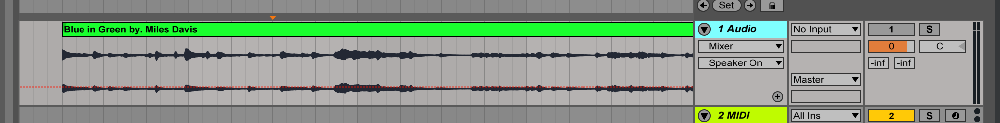
♫
No niin, tänään leikitään audion kanssa. Jos soittaa midiä huolimattomasti sisään, niin sitä on tietysti helppo korjata, mutta mitä tehdä jos on äänittänyt vaikka kitaraa ja jossain kohdassa ei pysykään rytmissä? Tai löytää jotain kivan samplen, joka toimii melkein? Tai jos haluaa muuten vain sotkea rytmin uusiksi? Warp mode avuksi!
Otetaan pohjaksi Kind of Bluelta Bill Evansin soittama Blue in Greenin intro. Se on soitettu rubatona, joten se vaatii vähän työtä jos aikoo saada sen toimimaan jonkin kompin kanssa. Voisin ripata sen levyltä, mutta laiskuuttani nappaan sen suoraan YouTubesta: http://www.youtube-mp3.org/ antaa pihalle mp3:n kun heitän siihen YouTube-linkin:
Draggaan mp3:n suoraan Liven arrangement-näkymään.
Vaihdan clipin asetuksiin BPM:ksi 60 joka on suunnilleen biisin tempo (se vähän vaihtelee) ja modeksi Complex (joka toimii hyvin kun kyseessä kyseessä ei ole puhdas biitti tms.)
Nyt toi osaa jo seurata biisin tempoa. Jos vaihdan yläreunasta tempoksi 120 niin toi soittaa sen tuplasti nopeammin muuttamatta silti äänen korkeutta, jos 45 niin aika paljon hitaammin.
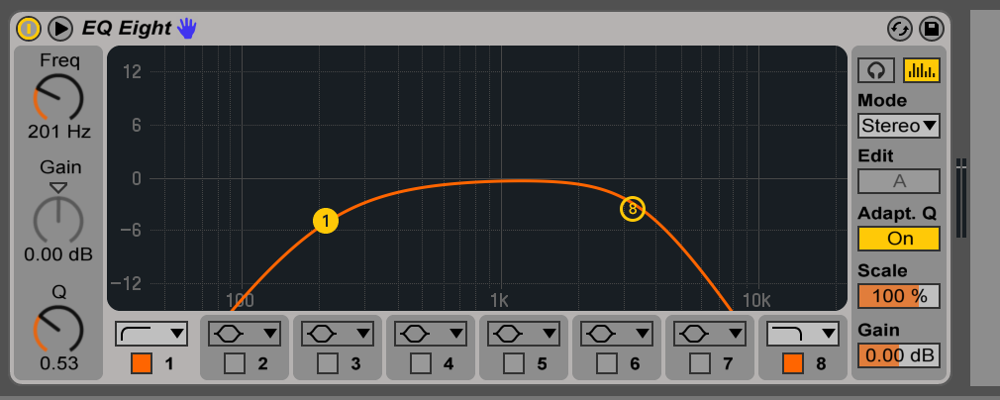
Yläpäässä on aika paljon kohinaa ja alapäässä on kontrabasso josta haluamme eroon. Laitetaan EQ ja leikataan yläpäätä ja alapäätä.
Piano kuulostaa vähän hengettömämmältä, koska alapää lähti pois, mutta sillä ei välttämättä ole väliä jos mukaan lisätään muita instrumentteja: yleensä se joka kuulostaa hyvältä yksinään kuulostaa huonolta joukossa ja päinvastoin. (Signaalissa on vain rajallisesti tilaa eri soittimien taajuuksille.)
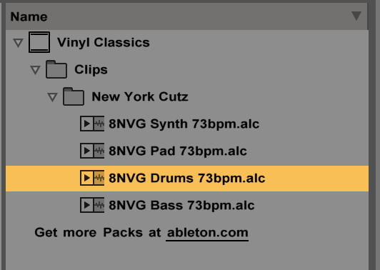
Lisätään Vinyl Classics -paketista valmis rumpubiitti, jotta ei eksytä harhateille. Biitti ehdottaa tempoksi 73bpm (se toimii muutenkin, mutta on alunperin soitettu tuolla tempolla) joten vaihdetaan se biisin tempoksikin.
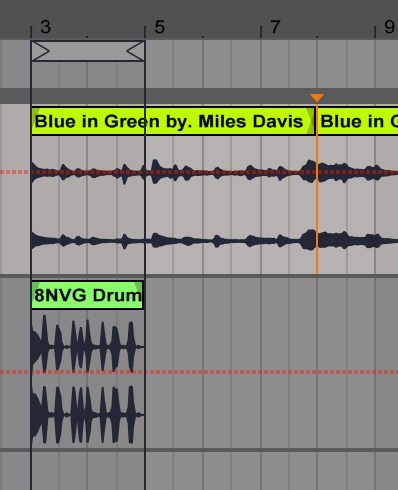
Siirretään marker vähän matkaa eteenpäin introssa ja isketään cmd-E, jotta se katkaisee regionit tuosta. Valitaan jälkimmäinen ja deletoidaan se kokonaan.

Tämän jälkeen valitaan alku, isketään cmd-J joka konsolidoi alkuosan omaksi tiedostokseen ja samalla normalisoi wavin. Se kuitenkin laskee automaattisesti volumea niin että se pysyy samalla tasolla (kuvassa -7.83dB), mutta normalisoidaan se 0 dB:hen, niin että tällä tasolla on täysi dynamiikka ja sitä voi laskea sitten kanavan faderillä.
Tästä näkymästä voisi halutessaan myös transponoida klippiä ylös tai alas puoliaskelilla (Transpose) tai vähemmän (Detune). Voi auttaa sekä epävireisten soitinten korjaamisessa että leikkimisessä jos haluaa jotain jännää. Lisäksi Rev.-napilla saa käännettyä tuon väärinpäin.
Samalla Live unohti warp moden vaihdetaan se takaisin Complex-asetukseen.
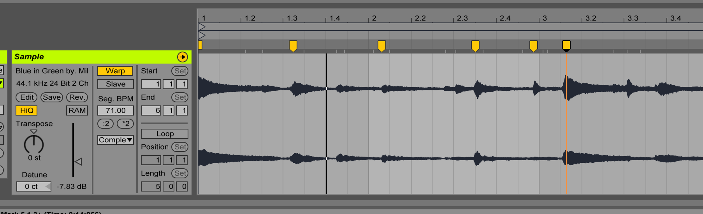
Katsomalla ja kuuntelemalla tunnistetaan missä kohtaa biisissä tulevat keskeiset iskut ja klikataan niille keltaiset warp-markerit.
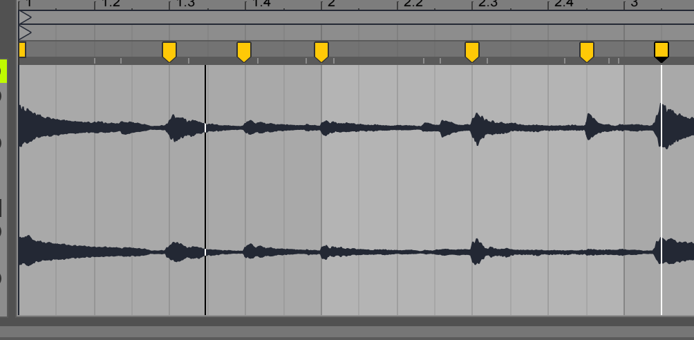
Siirrellään warp-markerit iskuille. Viimeisen warp-markerin olen siirtänyt suosiolla reilusti tahdin jälkeen, koska aion katkaista luupiin tuosta kohtaa enkä halua naksahdusta loppuun.
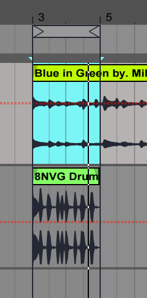
Valitaan tuosta tuo parin tahdin pätkä, isketään cmd-L jotta Live siirtää luup-markerit tuohon ja isketään spacea, jotta päästään kuuntelemaan luuppia kompin kanssa. Kuulostaa hyvältä, joten katkaistaan tuo audio tuosta kohtaa taas cmd-E:llä.
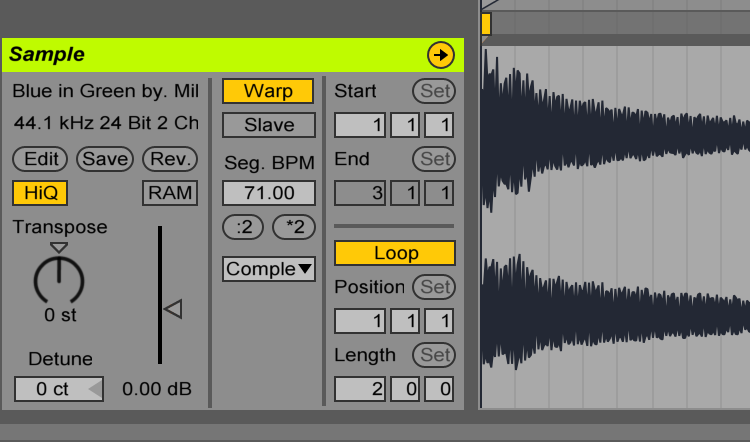
Emme halua että Live joutuu jatkossa laskemaan lennosta tuon warpin, joten konsolidoidaan toi taas waviksi iskemällä cmd-J. Sitten valitaan tulokselle (taas) warp modeksi Complex (jos haluamme jatkossa leikkiä muuten iskuin paikoilla) ja sanotaan clipille vielä että se on loop.
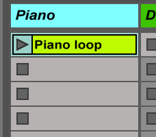
Valitaan vielä clip arrangement-näkymästä, isketään cmd-r, annetaan nimi “Piano loop”, kopioidaan se cmd-c:llä, ja pastataan se session näkymään, jotta sen voi triggeröidä helposti halutessaan.
Nythän tein aika tylsiä “korjauksia” siirtämällä vain iskuja aika suoraviivaisille paikoille, mutta tuolla voisi tehdä paljon villimpäkin manipulaatioilla. Kannattaa kokeilla erilaisten juttujen kanssa. Joskus olen soittanut jotain sisään ja sitten koittanut ihan vitsillä rytmittää sen uusiksi ja onkin tullut paljon parempi.
Ja mun pitää selvästi alkaa nimetä egagalle menevät esimerkit paremmin tai egagalta menee maine kun ihmiset luulevat niitä sen tekemiksi.
egaga ♫
no mulla on siihen jo ratkaisu: alias mutta toisaalta luulen että mainetta on vaikea tahrata
Jos jollain muulla on Splice-tunnukset, niin voin jakaa noi projektit siellä muillekin. (Tein siis eilen toisen esimerkin filttereistä ja automaatiosta.) Siellä voi kuunnella preview mp3:n ja avata suoraan projektin Liveen, jos se on asennettuna.
No niin, pistin tännekin: http://komu.kapsi.fi/ableton-examples/
https://www.ableton.com/en/packs/connection-kit/ slightly_smiling_face
egaga ♫
ToneBoosters TB_Isone_v3 ei pystynyt lataa kun yritin importata abletoniin
egaga ♫
kuulenko omiani mutta pianon seassa kuulostaa melkein joku tosi kevyt hyräily
Ah. Jäi vahingossa tuonne. Älä välitä siitä. Se on se huonesimulaattori josta puhuin joskus. Auttaa siis miksaamaan luurit päässä. Voi kertoa huoneen koon, millainen taajuusvaste kaiuttimilla on, pään koon jne. ja sitten se muokkaa signaalia ikään kuin kuuntelisi tuollaisessa huoneessa.
egaga ♫
vielä kun voisi omat aivot vaihtaa musikaalisimpiin :P
Joo, jostain siihen tulee resonanssia. Jos kuuntelet oikein tarkkaan, niin se kuuluu alkuperäisellä levytykselläkin: spotify:track:0aWMVrwxPNYkKmFthzmpRi
Korostuu vain tuossa nopeutetussa. Tuota voisi saada EQ:lla poistettua, mutta en viitsinyt lähteä siihen ettei mene ihan hakoteille.
egaga ♫
jos joskus pitää kulkea green mile, niin ton biisin saattelemana voisi
Jep. On kyllä upea biisi. Mutta en tiedä voisiko tuo olla sympaattista resonanssia jostain äänitystilassa olevasta asiasta. Pelleistä tms? Mutta kieltämättä nyt kun sitä kuuntelee, niin se on tosi voimakas tuossa alkuperäisessäkin versiossa.
Kun jotain kerran kuulee, ei sitä enää voi olla kuulematta.
Tänään instant junkkaa.
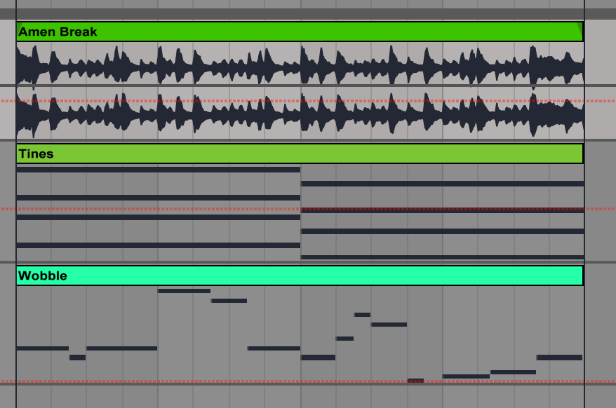
Tänään on aika leikellä Amen Brotheria. Aloitetaan lisäämällä amen break omalle raidalleen, nostamalla tempo rehtiin 180 bpm:ään ja heittämällä pari sointua (Cmaj7, Bbmaj7) ja wobble-bassoa pohjalle. Hei, tämähän on jo melkein junkkaa!
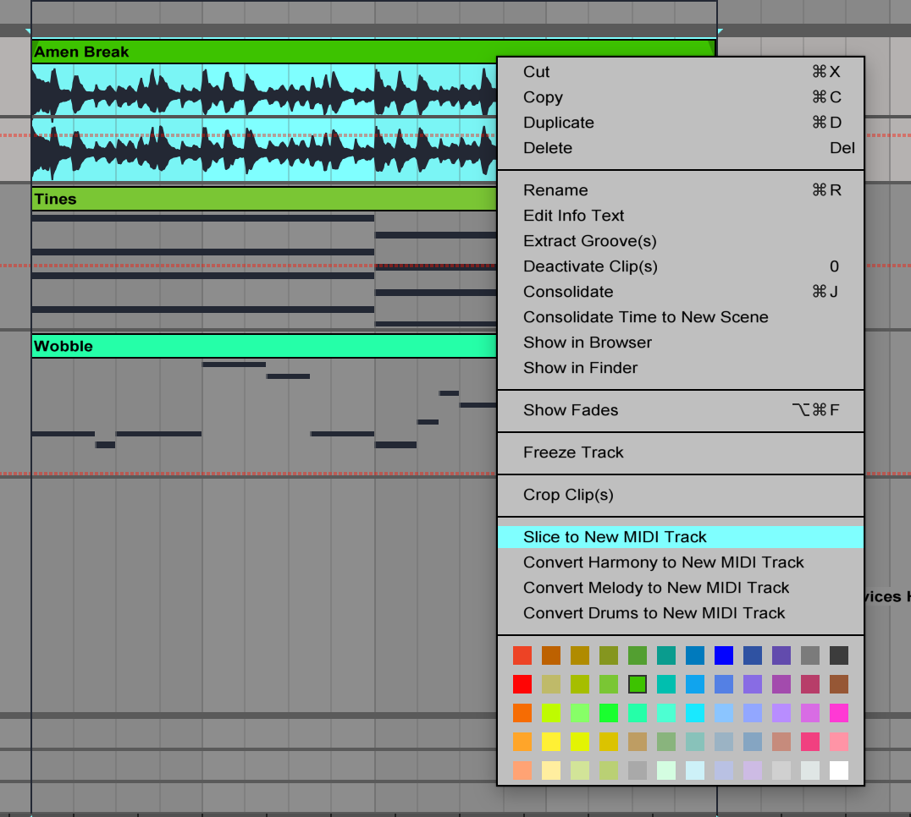
No niin, käydään kirurgisiin operaatioihin: yksi vaihtoehto leikkiä kompilla olisi warppailla sitä, mutta koska kompin ajoituksessa ei ole mitään vikaa vaan haluamme siirrellä kokonaisia pätkiä edestakaisin, niin se ei ole paras lähetysmistapa. Toinen vaihtoehto olisi copy-pasteilla käsin arrangement-näkymässä palasia: se on kaikista joustavin tapa, koska silloin voi tehdä mitä tahansa. Toisaalta se on hieman työlästä. Siksipä pyydämme Liveä choppaamaan samplen meille valmiiksi sampleriin, niin että jokaisesta iskusta tulee oma midi-nuottinsa.
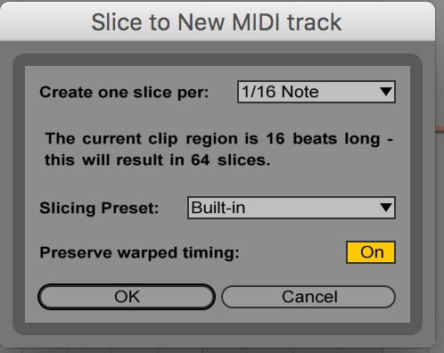
Tuo on 1/16-komppi, joten slicetaan jokainen 1/16-nuotti omaksi iskukseen.
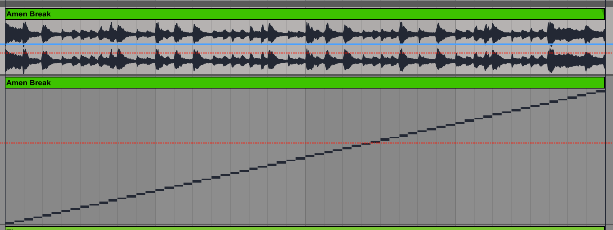
Live katkoo samplen pieniksi palasiksi joista jokainen mäpätään omaan nuottiinsa ja tekee midi-nuotit jotka soittavat alkuperäisen pätkän. Tuloksena on siis tällainen "portaikko" joka käy kaikki samplet kerran läpi. Mutta koska portaikon nuotit ovat normaalia midiä, voimme nyt ruveta leikkimään niillä.
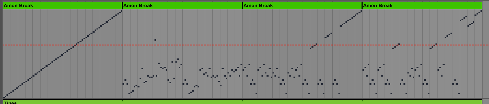
Ensin neljän tahdin pätkä alkuperäistä amenia, sitten 3 neljän tahdin pätkää, joissa komppia on rikottu.
Ja täällä projekti: https://splice.com/studio/C9DA4AC3-D2EB-4588-B417-11236570B689
On muuten yllättävän hauskaa tehdä tällaisia kun ei tarvitse yrittää saada mitään valmista ja toisekseen voi tehdä ihan kieli poskessa korneja juttuja joita ei normaalisti viitsisi.
Tästä vielä linkki alkuperäiseen breikkiin kontekstissaan:
Mainitaan nyt vielä tuosta slice-toiminnosta sen verran että se tosiaan tekee tuosta uuden Drum Rackin, jossa jokainen slice päätyy omaan slottiinsa. Rack sitten aina mäppää sisääntulevat nuotit oikealle samplelle. Mutta tuo Drum Rack on siitä vinkeä vekotin, että niiden slottien ei ole pakko olla pelkästään sampleja, vaan jokainen slotti on itsessään mielivaltainen chaini midistä audiolle. Defaulttina se tekee joka slottiin oman samplerin, mutta niitä voi vaihtaa syntikkoihin tai samplejen jälkeen voi laittaa efektejä jne. Eli jos haluaa vaikka ekvalisoida jotain samplea, niin sinne vain oma EQ jne.
Absotonin perusidea on siis se, että on kolmenlaisia blokkeja (“funktioita”): midi-efektit (MIDI -> MIDI), instrumentit (MIDI -> Audio) ja audio-efektit (Audio -> Audio). Noita voi sitten iskeä normaalisti kanavalle ketjuun peräkkäin, groupata uusiksi blokeiksi jotka toteuttavat vastaavia signatureja (esim. "instrumentti + audio-efekti + audio-efekti" on itsessään “instrumentti”, koska se on tyyppiä MIDI -> AUDIO). Ja rackit mahdollistavat noiden laiton rinnakkain: drum rack sisältää monta instrumenttia ja valitsee niistä yhden, instrument rack sisältää monta rinnakkaista instrumenttia jotka kaikki saavat saman midin ja joiden output miksataan yhteen ja effect rack monta rinnakkaista efektiä jotka kaikki saavat saman audion ja joiden output miksataan yhteen.
Eli tuosta syntyy sitten kivasti kompositionaalisuutta rinnan ja sarjassa ja noista palikoista voi rakentaa taas isompia palikkoja jne.
Onko muuten sopiva vaikeustaso? Pitäisikö olla enemmän/vähemmän detaljeja? Ja onko ylipäätään yhtään kiinnostavaa? smiley
egaga ♫
kaks ekaa vaikutti ainakin sopivalta. on kiinnostavaa toki. mutta esim. eilen meni koko päivä toimistolla/sohossa hengatessa ja yö koodatessa että en pysty mitenkään samaan tahtiin consumoimaan noita :)
kope ♫
Lisää bassoa.

Tänään tehdään 2-vuotiaan päiväunien mittainen biisi yksinkertaisella tekniikalla: tehdään lyhyt pätkä, duplikoidaan se ja muokataan jälkimmäistä. Sitten taas duplikoidaan, muokataan jälkimmäistä jne. niin kauan kunnes koko homma on valmis. Tätä sovelletaan joka tasolla: yksittäisissä riffeissä ja koko biisin rakenteessa. Kuvassa lopputulos.
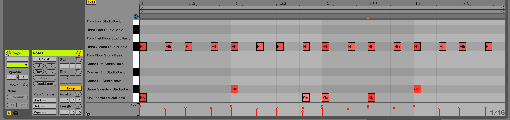
Aloitetaan tekemällä tahdin mittainen suoraviivainen rumpukomppi.
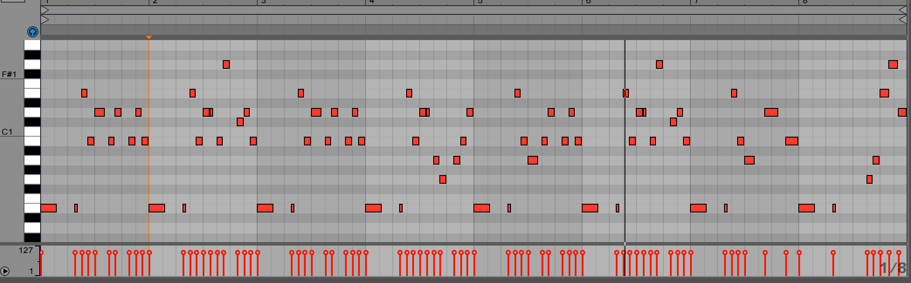
Isketään duplicate-nappia, jotta tuplaa loopin pituuden ja kopioi nuotit jälkimmäiselle pätkälle. Lisätään jälkimmäiseen osaan vähän hihat-iskuja ja muutetaan neloselle tuleva hihat avoimeksi.
Kopioidaan uudestaan, muokataan. Ja taas kerran, jotta saamme 8 tahtia komppia joka elää koko ajan vähän, mutta pysyy periaatteessa samana.
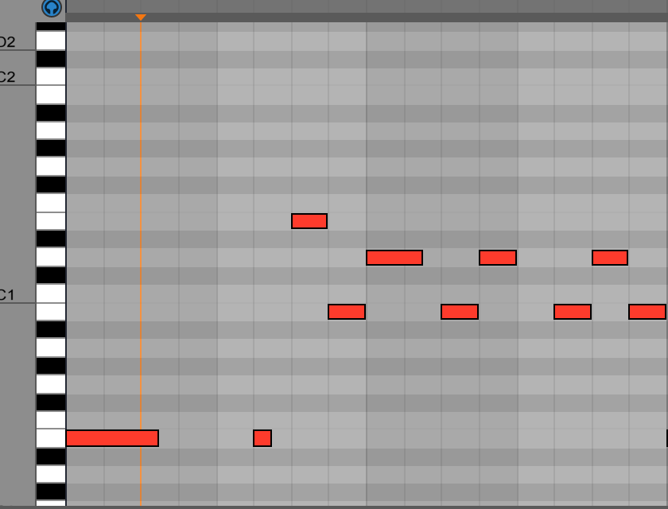
Tehdään sama bassolle: lähdetään yhden tahdin simppelistä riffistä, jossa leikitään septimillä.

Lisätään vähän kielten venytyksiä. (Kuinka kieltä voi muka venyttää alaspäin pitemmäksi kuten alussa? :)
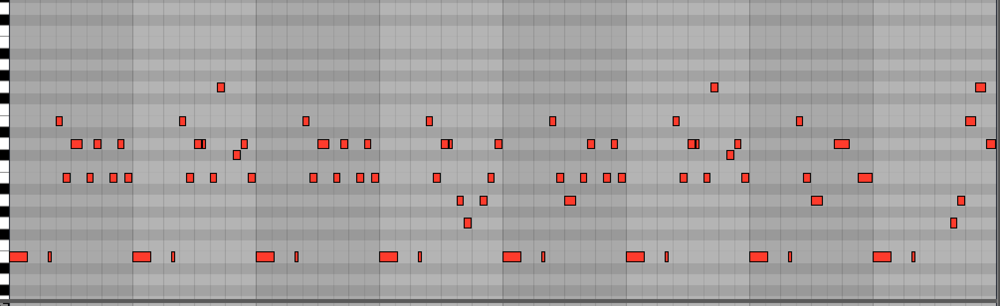
Taas jatketaan samalla prosessilla että saadaan vähän eloa.
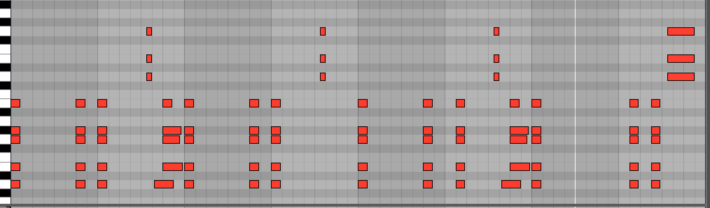
Sama idea. Perusrytmi on ekassa tahdissa, loppu on leikkimistä sillä.
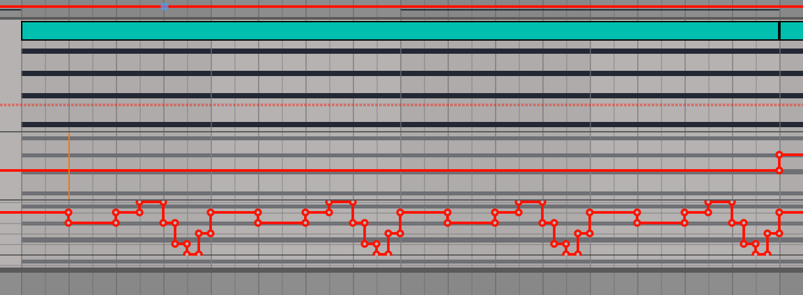
Lisätään tahdissa 33 uusi instrumentti: syntikka jonka filter LFO:n nopeudella leikitään.

Tahdissa 17 aletaan leikkiä basson cutoffilla.
Jäi näköjään ylimääräistä aikaakin, koska Aki ei ole vielä herännyt. Ehkä pitäisi vielä lisätä niitä bassoja. (Hätäisesti huonoilla luureilla kuunnellut balanssit: tuli taas älyttömästi bassoa.)
Toki kun alle tunnissa teki tuon, niin tuo on tuollaista paikallaan junnaavaa roskaa (enkä ole miksannut sitä mitenkään), mutta itse tekniikka on ihan hyödyllinen. Etenkin yksittäisten instrumenttien osioiden kohdalla, mutta myös kokonaisten sovitusten kanssa sopivissa tyyleissä kunhan ei ota sitä liian orjallisesti. Ja hyödyllinen ennenkaikkea kun tekee harjoituksia. On hyvä yrittää saada tehtyä “valmiita” biisejä paljon, vaikkei aikoisi niitä koskaan kellekään julkaista.
egaga ♫
jep vaikuttaa luontuvan tohon abletonin malliin tollainen copy-modify/enhance-metodi. aika helposti vissiin saa eloisaa soundia noilla filttereillä/efekteillä
Mahtaakohan kukaan muu kostua tästä mitään kun olen kuitenkin lähinnä vain antanut vinkkejä tuohon softan UI:hin? slightly_smiling_face
egaga ♫
en tiiä mut jos en itse olisi liven omistaja niin kiinnostaisi seurata silti
Jees, saa toki seurata. Ainahan sitä pääsee pois jos ei kiinnosta.
egaga ♫
luulen että ariokin on kiinnostunut ja vaikkei koskaan mitään tekisi niin saa ehkä jotain kuvaa millaista työskentely/kehittäminen on. ainakin itselle avaa silmiä
ariok ♫
kiinnostaa periaatteessa wink
ariok ♫
amigalla taisin joskus opetella vähän käyttään sound fx:ää, mutta musiikillisia taitoja 0 ja mikä tärkeintä ideoita 0 niin siihen se jäi
egaga ♫
mä voin antaa ideoita
egaga ♫
voin antaa muutakin mutta seon vain ripauksellinen
ariok ♫
ja komu musiikilliset taidot?
egaga ♫
en uskaltanut komun puolesta luvata
ariok ♫
joten mun ei tartte tehdä mitään
egaga ♫
sun pitää käyttää trackpadia
egaga ♫
(SP:ä vois joskus kokeilla uudestaan)
ariok ♫
oho hoh, ehdottomasti
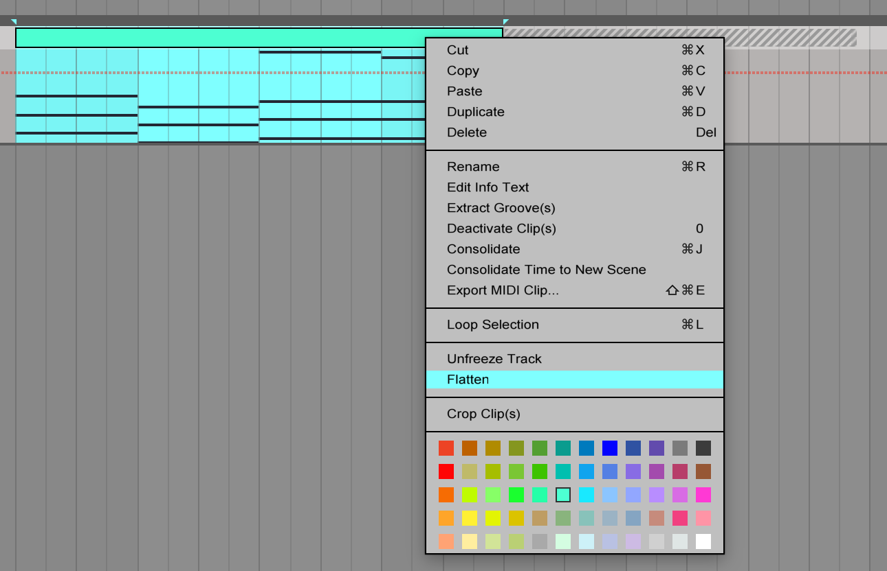
No niin, sitten bouncataan midiä audioksi. Asioiden pitäminen midinä on tietysti monessa mielessä joustavampaa, koska voi helposti muuttaa nuotteja jne. Toisaalta jos on paljon syntikoita ja efektejä, ne saattavat viedä melko paljon CPU-tehoja. Livessä on Freeze-käsky, jolla voi pyytää Liveä laskemaan etukäteen audion halutulle raidalle, jonka jälkeen raidalla olevat asiat eivät vie CPU:ta, mutta vaativat tietysti enemmän levytilaa. Jos sitten haluaakin muokata, voi tehdä unfreezen helposti.
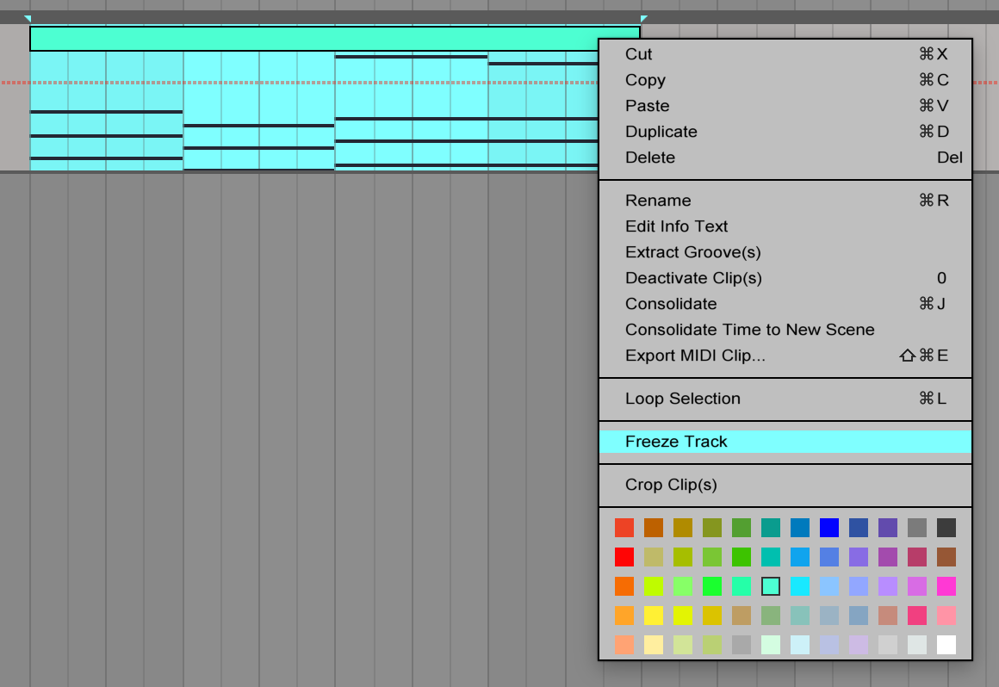
Toisaalta jos freezen jälkeen haluaa midistä kokonaan eroon, voi sanoa Flatten. Tähän voi olla muutamakin hyvää syytä: ensinnäkin audion kanssa voi tehdä jotain jatkokäsittelytemppuja, jotka midillä eivät onnistu. Toisekseen moni muusikko on sitä mieltä että audion "printtaaminen" parantaa tuottavuutta, koska sitoutuu johonkin eikä voi viilata asioita loputtomiin. Kolmanneksi, joissakin syntikoissa on epädeterminismiä eri soittokertojen välillä kun taas samplattu audio on aina sama. Ja neljänneksi, mahdollisten phasing-ongelmien selvittely on helpompaa audiolla. Me teemme freezen ekasta syystä.
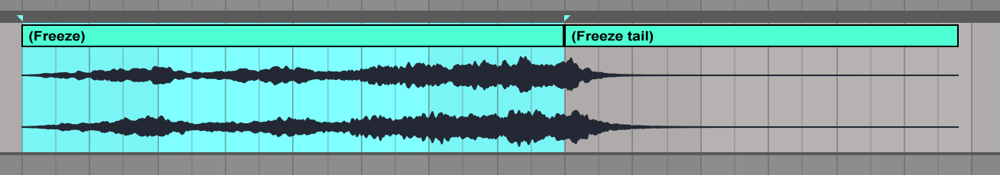
Tulokseksi tulee kaksi regionia: yksi itse midille ja toinen sen reverb tailille. Yhdistetään ne cmd-J:llä.
Nyt kun raita on freezattu, emme käsittelekään sitä sellaisenaan, vaan nappaamme sen sampleriin jonka sitten triggeröimme midillä. Luomme uuden midi-raidan, lisäämme siihen Samplerin, draggaamme regionin sampleriin ja luomme yhden pitkän C3-nuotin.
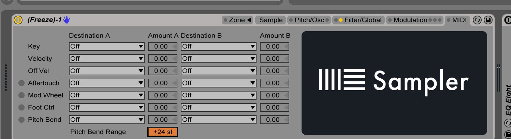
Säädämme samplerin asetuksista bitch bend rangeksi kaksi oktaavia.
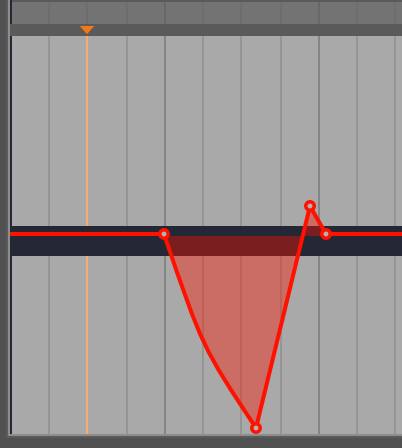
Nyt piirrämme raidalle bitch bend autiomaation joka aiheuttaa “kasetinpysäytys”-efektin.
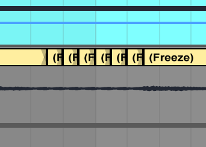
Freezaamme ja flattenöimme taas raidan, jotta saamme sen audiona pihalle. Nyt emme enää ota tulosta sampleriin vaan teemme vähän hyppivää CD:tä duplikoimalla lyhyitä pätkiä audiosta. Valitaan sopiva pätkä ja isketään cmd-D:tä muutaman kerran peräkkäin.
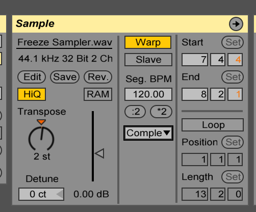
Lopuksi vielä otetaan lyhyt pätkä, clipataan se cmd-E:llä omaksi clipikseen ja transponoimme sitä asetuksissa pari sävelaskelta ylöspäin. (Ja vaihdetaan Complex-mode, jotta Live käyttää materiaalille sopivaa algoritmia.)
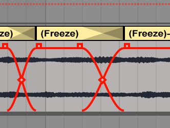
Crossfadaamme transponoidun pätkän vielä vierekkäisiin clippeihin ettei tule naksunaa epäjatkuvuuskohdissa.
Ja täällä projekti: https://splice.com/studio/20EF202C-3694-43C2-A656-768EE7875FAD
Jätin projektiin kaikki välistepit disabloituina raitoina, niin että voi testailla niitäkin.
Tuo syntikkachain voi olla myös tutustumisen arvoinen. Siinä on päällekkäin Analog ja Operator ja molemmilla omat efektilenkkinsä.
mkel ♫
mulla voi kans kaiken muun tekemisen ohella olla vaikea pysytellä tahdissa, mutta katselen noita kyllä mielelläni läpi kun ehdin.
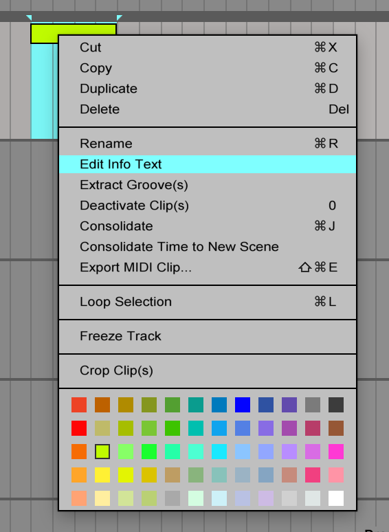
Illan minivinkki. Vasemman alareunan Info View antaa käytännössä kaikista UI-elementeistä lisätietoa mouse-hoverilla.
Vähemmän tunnettu juttu on se, että aika monelle elementille sen voi customoida: esim. clipeille voi valita context-menusta Edit Info Text. Tämä on hyvä paikka laittaa esim. TODO-kommentteja eri clipeille.
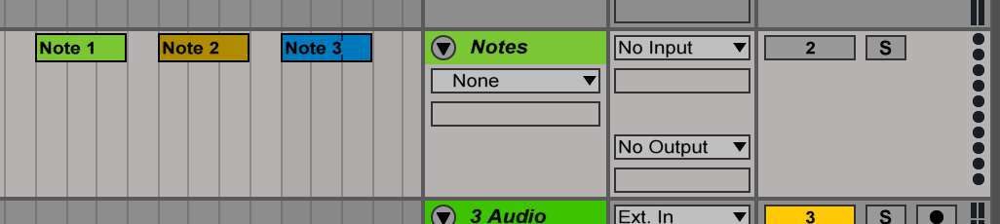
Lisäksi voi olla ihan hyvä idea omistaa kokonainen raita muistiinpanoille. Eli raidalla ei ole mitään instrumentteja, vaan pelkästään tyhjiä clippejä joilla on otsikko ja joiden info-tekstissä on sitten erilaisia asioita joita haluaa kirjata muistiin.
ariok ♫
miten kukaan ehtii lapsen päiväunien aikaan tekeen muuta kun korkeintaan keittään sumpit? (vaikka kuinka olis intoa)
No jos kuuntelit tuon, niin ehkä huomasit ettei siinä nyt varsinaisesti mitään ehtinytkään tehdä. slightly_smiling_face
Jos olisi ollut aikaa, niin olisi ehtinyt kehittää tolkullisempia soundeja, miettiä fiksumpia riffejä/sointuja ja muutenkin saada vähän enemmän variaatiota kokonaisuuteen. Nyt oli vain tuollainen “tehdään hätäisesti jotain demoa”.
Toki taisi mennä puolet tuosta ajasta kirjoittamiseen. smiley
ariok ♫
Et uskokaan miten laiska olet. Kuvailisin, jos jaksaisin.
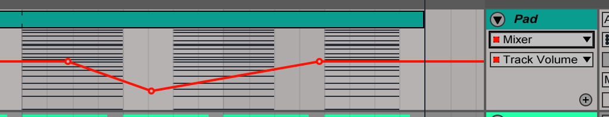
Sitten pikkuvinkki, jonka olisin itse halunnut kuulla jo monta vuotta sitten Logicia käyttäessä.
Jos haluaa tehdä volume-muutoksia jollekin raidalle, ensimmäinen ajatus on tietysti tehdä automaatio kanavan volumelle. Tämä on huono ajatus, koska jos myöhemmin haluaa säätää miksausnäkymän feiderillä kanavan tasoa suhteessa muihin, joutuu tekemään automaationsa uudestaan. Tekee miksauksesta ikävää.

Parempi ratkaisu on lisätä kanavan efekti-ketjun loppuun Utility oletusasetuksilla.
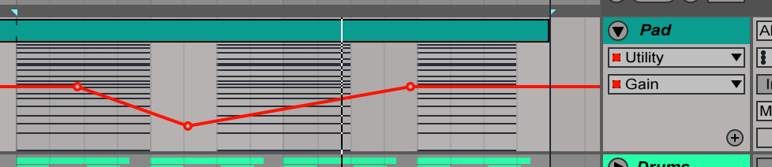
Nyt voi tehdä automaationsa utility-efektin gainiin, niin että tasovaihtelut ovat suhteellisia suhteessa kanavan perustasoon. Vastaavasti temppu onnistuu panoroinnille.
Ongelmaksi jää enää se, että jos haluaa viedä automaatiolla kanavan täysin hiljaiseksi. Utilityllä saa maksimissaan -35dB pois. Tuollaisessa tapauksessa laittaa tyhjän audio effect rackin ja automatisoida sen gainia: sillä on säätövaraa -∞dB asti.
egaga ♫
on mennyt monta päivää ettei oo yhtään kerennyt tätä uusinta entryä kattella... mut eiköhän jossain vaiheessa
No tiivistettynä: jos joskus tulee halua automatisoida kanavan volumea, niin älä automatisoi Track Volumea, vaan lisää Utility ja automatisoi sen gainia. Kiität miksatessa kanavien tasoja.
egaga ♫
niin ei tartte tiivistää :D (kiitos silti). ajattelin vain että parempi lukea sitten huolella kun lukee; jos lukee pinnallisesti niin saattaa jäädä kunnolla lukematta
ariok ♫
vaikka ei lue pinnallisesti niin saattaa silti jäädä lukematta (ja puhun nyt itsestäni)
egaga ♫
ariok: puhu vaan omasta puolestasi :P
ariok ♫
joo, olis pitänä tarkentaa että puhun nyt vain itsestäni
egaga ♫
eikun vitsailin että en olisi lukenut suluissa olevaa
Älä nyt ariok taas puhu minun puolestani.
ariok ♫
tarkoitin tietysti että puhun vain itsestäni ja vain itsestäni
Törmäsin muuten kaapissa ylimääräiseen Live Lite (https://www.ableton.com/en/products/live-lite/) sarjanumeroon jos jotakuta kiinnostaa. (Noita saa melkein minkä tahansa audiotarvikkeen kylkiäisenä.)
Ellen ihan väärin muista niin tuo on vielä pikkuisen karvalakkisempi kuin se 79€ maksava Intro. Mutta jos joku haluaa, niin voin heittää tuon sarjanumeron, mulla ei ole käyttöä.
kope ♫
kiinostaa kyllä vähäsen - jos kukaan ei ilmoittaudu tarvitsijaksi voisin vähän leikkiä
Myyty herralle joka näkee kuollutta koodia. 526D-B650-9277-C6E7-1B6D-BBF0
kope ♫
Kiitos!
kope ♫
Tästä https://www.amazon.com/BasicSynth-Daniel-Mitchell/dp/0557022126 (Komulta lainassa) innostus alkoi.
Toi on kyllä kiva kirja.
kope ♫
Joo, tykästyin kanssa
kope ♫
lähtee järkevistä paloista + kooodiesimerkit on hyviä
kope ♫
Ei liikaa teoriaa silmille, mutta ei myöskään mikään for dummies tyylinen kirja
Ostin MIT Pressin The Audio Programming Bookin ja tuon sai halvalla koriin mukaan. Ajattelin että se toinen olisi kunnon kirja. Mutta se olikin joukko eri tyyppien kirjoitamia artikkeleita jotka toistivat samat asiat N+1 kertaan.
Jep.
kope ♫
sen koin vähän vaikeasti lähestyttäväksi, kun sitä vilkaisin
kope ♫
Tietty mun ongelma on se, etten tiedä aiheestä yhtään mitään
Tuossa MIT Pressin kirjassa on vielä kaikkia ihan typeriä lukuja siitä kuinka C toimii, kuinka C:llä kirjoitetaan tiedostoja tai kuinka tehdä plugineja CSound-ympäristöön.
kope ♫
Lite versiokin muhevat 900megaa...
Taitaa Litenkin mukana tulla kivasti sampleja vaikka muuten on rajoitettu.
Hmm, no eipä tuossa niin hirveästi sampleja näyttäisi tuon feature-listauksen perusteella tulevan. Mutta ehkä noi kaikki versiot sisältävät samat bitit ja toi on vain lisenssistä kiinni koska suiten download on myös 912MB. (Siinä on sitten lisäksi vielä ties kuinka monta gigaa erilaisia paketteja jotka voi imuroida.)
egaga ♫
joo siistii
Oletko muuten imuroinut kaikki packit, jotka Suiteen kuuluu? Mulla olisi DVD:t jos ei huvita imuroida ~8 DVD:n verran kamaa.
egaga ♫
En oo imassu. en usko että se on ongelma. Pitäs lainata dvd-asemaakin
Kannattaa kokeilla aloittaa Abletonin omien Max-devicejen imuroinnilla. Pieni paketti jossa on paljon kultaa: LFO, Granulator II, Convolution Reverb jne.
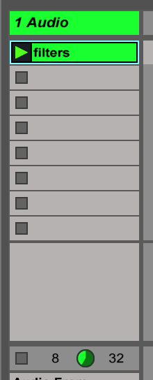
Kun nyt tuli tuosta LFO-devicestä mainittua, niin leikitään sillä sitten. Otin pohjaksi edellisen filters-esimerkin (http://komu.kapsi.fi/ableton-examples/filters.mp3) jonka draggasin suoraan Liveen omaksi samplekseen ja pistin looppaamaan.
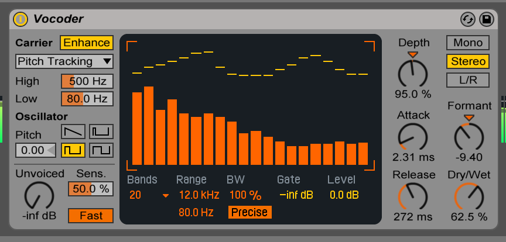
Lisätään kanavalle joku efekti jota automatisoidaan automaattisesti. Vocoder on varmaan sopivan korni ja ennen kaikkea selkeä, jotta tunnistetaan se.
Laitetaan se Pitch Tracking -moodiin, jolloinka se ei ota carrieriksi erillistä signaalia vaan generoi alla olevalla oscillaattorilla itse signaalin jonka modulaattorina on alkuperäinen raita. Vaihdetaan oscillattoriksi keskikokoinen pulssiaalto ja tehdään jotain muita sääntöjä. Käännetään Dry/Wet 60% kieppeille, jotta molemmat signaalit kuuluvat melko kovaa.
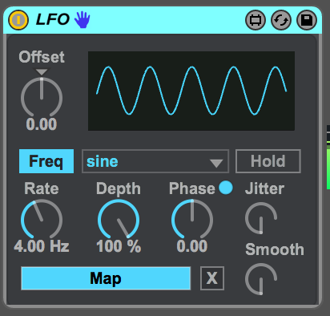
Sitten lisätään Max for Live Essentials -paketista löytyvä LFO-efekti. Klikataan efektin Map nappia ja sen jälkeen klikataan Vocoderin Attack -nappia.
Nyt LFO rupeaa kääntelemään Vocoderin nappia automaattisesti, mutta tempo on vähän hurjan vauhdikas (4.0 Hz eli neljä kertaa sekunnissa edestakaisin).
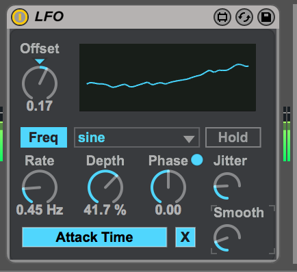
Laitetaan tolkullisemmat säädöt: Rate controlloi nopeutta, Depth sitä kuinka paljon edes takaisin LFO kääntelee nappia, Offset sitä mikä on napin keskitila. Jitter lisää vähän satunnaisuutta käyrään ja Smooth tasoittaa satunnaisuuden määrää. Phase controlloisi vain käyrän alkua, mutta ei välitetä siitä.
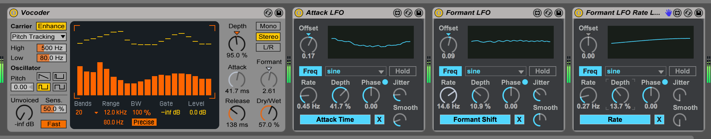
Mikään ei tietysti estä meitä lisäämästä uutta LFO:ta joka moduloi toista LFO:ta. Eli lisätään nyt vielä piruuttaan uusi joka kääntelee Formant LFO:n ratea automaattisesti.
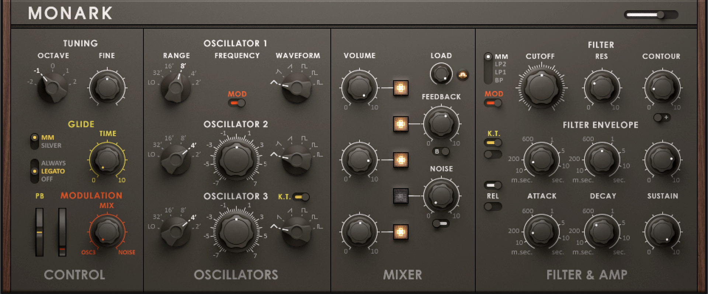
Sitten vielä toinen esimerkki kuinka saa generoitua muutoksia vähällä vaivalla.
Tässä esimerkissä käytän Native Instrumentsin Monarkia joka on Minimoog-emulaatio. Olen bouncannut projektiin kuitenkin tuon tuolla tehdyn jutun audionakin, joten ei tarvitse välittää tuon puutteesta.
Joka tapauksessa ensin leikitään vähän aikaa vivuilla tai etsitään mukava presetti jotta saadaan soundi josta tykätään.
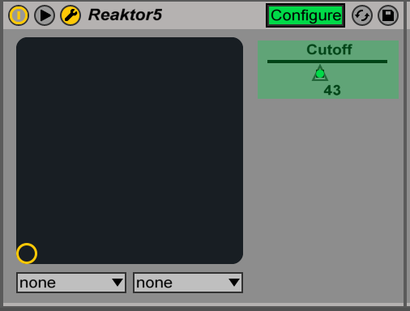
Klikataan ulkoisen pluginin containerin Configure-nappia, jolloin saadaan uudestaan edellinen plugin-ruutu esiin ja käännetään siellä hiirellä Cutoff-namiskaa, jolloin se ilmestyy automaattisesti tähän listaan Liven näkemistä parametreista. Klikataan uudestaan Configure, jotta tuo moodi menee pois päältä.

Lisätään yksinkertainen yhden tahdin mittainen bassoriffi. Lisäsin toiselle raidalle myös satunnaisen rumpukompi suoraan jostain Liven kirjastoista sen kummempia miettimättä.
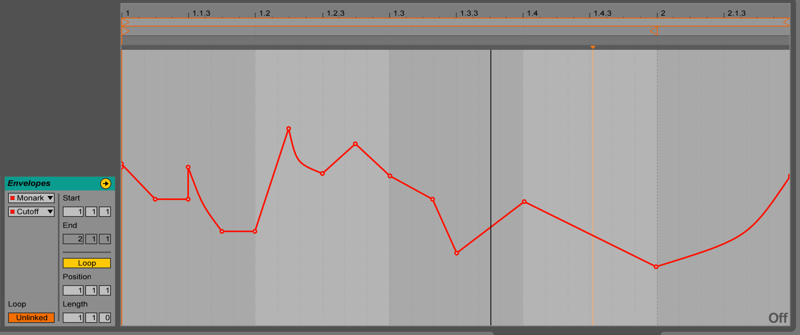
Sitten pihvi! Piirretään cutoffille automaatio-envelope, mutta klikataan Loop: Linked muotoon Loop: Unlinked ja vaihdetaan tuon pituus oletusarvosta 1:0:0 arvoon 1:1:0 (eli 1 tahti ja 1 isku = 5 iskua).
Nyt nuotit luuppaavaat 4 iskun mittaista luuppia, mutta automaatio päällä luuppaakin 5 iskun mittaista luuppia joten tuo ei toista itseään kuin 20 iskun (5 tahdin) jälkeen.
Jos lisäisi vielä vaikka 7 tahdin mittaisen automaation eri parametrille, niin tulisi (4*5*7)/4 = 34 tahtia variaatioita. (Huomattavaa että 4, 5 ja 7 eivät ole keskenään jaollisia, joten saadaan maksimiperiodi.)
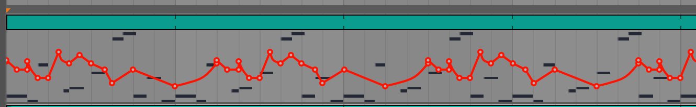
Nauhoitin tuota clippiä vielä tuohon arrangement-näkymään niin että näkyy kuinka nuottien ja automaation periodi on tosiaan eri.
http://komu.kapsi.fi/ableton-examples/ -> unlinked-automation ja https://splice.com/studio/E58D6D66-F9B8-4DBE-92A0-9EAA14B5F78E
Selvästi pitäisi koodata tuohon playeriin tuki linkeille suoraan biiseihin.
Äh, mitä minä horisen. Tietenkään en voi bouncata automaatiotonta versiota audioksi ja sen jälkeen lisätä automaatiota audion päälle, koska tuossa automaatiossa leikittiin nimenomaan sillä alkuperäisellä devicellä, eikä millään ulkoiselle efektillä. No, tuo projekti on aika hyödytön jos ei omista Monarkia, mutta onneksi itse ajatus muuten on sovellettavissa mihin tahansa.
Sori tästä, oli vain pakko päästä leikkimään Minimoogin ihanan kermaisella filtterillä.
Nyt tosiaan piirtelin noi käyrät, mutta toki voi myös nauhoittaa sitä kun kääntelee potikoita.
@slack_käyttäjä taitaa omistaa Monarkin, oletko leikkinyt sillä?
mkel ♫
enpä omistakaan. hotsitteli kyllä hankkia NI-setti, mutta sitten tajusin, että voisin vaikka ensin katsoa mitä jo olevilla synilla saan aikaiseksi.
mkel ♫
mietin kyllä, että jos hankkis NI:n insttrumentit, se vois vähän helpottaa sitä ongelmaa, että aina tuntuu softasynat huonoilta ja siks palaa leikkimään hardiksilla.
No, Analog ja Operator ovat kyllä molemmat asiallisia. Pitää vain muistaa, että ne ovat kohtuu pelkistettyjä, koska olettavat että niiden perään voi sitten kasata muita Liven efektejä. Mitään Massive-tyyppistä wavetable-syntikkaa ei Liven mukana tule, mutta jos haluaa pelkästään sellaisen, niin Serum on parempi Massive kuin Massive.
Ja Operator on tietysti hankala sen takia, että FM-synteesi vaatii sen että siihen vähän perehtyy. Muuten saa vain random noisea pihalle.
Ja toki softankin kanssa on ihan hyvä ajatus mäpätä keskeisimmät parametrit johonkin kontrolleriin ja sitten käännellä niitä potikoita ja fiilistellä.
mkel ♫
joskus ajat sitten tuli leikittyä jonkin verran FM7-softasynalla, mutta viime vuosina olen lähinnä käyttänyt analogi- ja virtuaalianalogilaitteita. aika pelkistetystäkin analogisynasta saa kyllä yllätävän paljon kaikkea erikoista pihalle ilman efektejäkin, kun vähän säätää.
mkel ♫
ja näin ei-asiantuntijana mulle ainakin on muodostunut sellainen fiilis, että sitä kivempi ja parempi syna, mitä muhevammat ja monipuolisemmat äänet saa ilman efektejä. sit kun sillai on hyvä saundi, voi vielä perään viimeistellä efekteillä.
mkel ♫
tai siis mitä nyt tarkoittaakaan efekteillä. tietysti lfo:t ja envelopet tässä tarkoitan syntikan sisäisiksi, mutta mikäänhän ei tietenkään estä Livessä käyttämästä synan ulkopuolisia komponentteja noihinkaan.
FM tosiaan vaatii vähän matikkaa pohjalle, että saa haluamaansa ulos. Toki Operatorin kanssa voi huijata, koska ensinnäkin se sallii erilaisten aaltomuotojen käytön pohjana ja lisäksi siinä on filtterikin, jolla voi leikata. (Sen sijaan että tarvitsisi miettiä mitenkä moduloida aaltoa jotta saa tiettyjä taajuuksia aikaiseksi.) Ja toki voi iskeä perään ihan normaalin filtteri-efektin jne.
Saturaatio ja kevyt reverb voi olla ihan jees usein. Joissakin soundeissa chorus (joka toki löytyy monesti synan itsensä puolelta).
Sitten toki eq:ta ja mahdollisesti kompressoria, mutta harvemmin muuta.
Mutta yleisesti lähden tosiaan Analogilla liikkelle, koska suunnilleen osaan saada haluamani soundin siitä pihalle. Tutut oscillaattorit, filtterit, envelopet, siinäpä se. Bassoja kyllä teen usein Operatorilla. Saa kivaa FM-pörinää niihin helposti.
Osaan kyllä teoriassa laskea mitä taajuuksia siniaallon modulointi toisella siniaallolla tuottaa, mutta käytännössä en ole sitä koskaan lähtenyt tekemään. Monimutkaisemmille aalloille mulla ei ole pienintäkään aavistusta siitä mitä tapahtuu. Käytännössä menen vain “siniaaltojen kokonaislukumonikerrat tuottavat harmonisia juttuja (ja pienemmät eritoten) ja ei-kokonaisluvut tuottavat epäharmoniaa”-nyrkkisäännöllä. Sitten vain yrittää törmätä johonkin hauskaan ja säätää envelopeja liikkuakseen soundista toiseen.
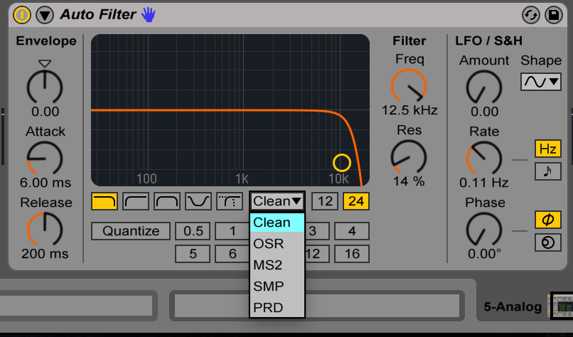
En tiedä huomasitko, mutta kohtuu uudessa Livessä (9.5, 9.6?) tuli tuohon autofiltteriinkin eri filtteritoteutuksia. Se vanha toteutus on tuo Clean, mutta nyt on myös neljä muuta joissa on vähän enemmän särmää. Kaikille noille uusille tyypeille voi myös säätää Drive-parametria, niin saa ne filtterit särkemään kivasti.
/u/Holy_City osasi kertoa seuraavaa:
- OSR on SVF jonka pohajana on obskuuri OSCar ja jota Oberheim SEM käyttää
- MS2 on Sallen-Key jonka pohjana on Korg MS-20
- SMP on joku Abletonin oma
- PRD on ladder eli pohjana on Moog
Liven manuaalihan jättää noihin vähän mystisyyttä “OSR […] is modeled on the filters used in a somewhat rare British monosynth, and is available for all filter types” ja “The PRD circuit uses a ladder design and has no explicit resonance limiting. It is modeled on the filters used in a legacy dual-oscillator monosynth from the United States and is available for the lowpass and highpass filters.” Mutta kyllähän tuosta jälkimmäisestä jo arvasi.
mkel ♫
näyttää lupaavalta.
Toi on kyllä hupsua kun ilmeisesti tekijänoikeussyistä ei koskaan mainita noita mitä emuloidaan (tai nauhoitetaan). Monark esimerkiksi ei missään sano olevansa Minimoog-emulaatio vaan käyttää lauseita kuten "MONARK captures the pure organic sound of the undisputed king of monophonic analog synthesizers.” Vastaavasti Scarbee MM Bass ei missään sano, että MM on MusicMan Stingray vaan ainoastaan "SCARBEE MM-BASS is […] inspired by the sound of Bernard Edwards (Chic). Bringing you the warm and creamy fingered bass sound of the 70s known from countless disco and funk recordings.” Kuka tahansa basisti tietysti tietää että Bernard Edwardsin soundi on synonyymi MusicManille. Ja toki MM on aika hyvä vihje.
MusicManilla on muuten hauska historia: Leo Fender myi Fenderin ja perusti uuden lafkan. Tai kilpailukieltosyistä joku muu perusti sen, mutta Fender suunnitteli soittimet.
Ratkihauskaa, LOL.
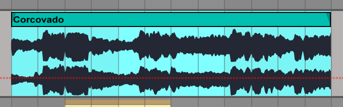
Nyt leikitään granulaarisynteesillä ja Granulator II -syntikalla, jonka saa Liven full-version mukana.
Aloitetaan etsimällä joku sample jota käytetään pohjana uusien soundien luomiseen. Otin Elis Reginan ja Antonio Carlos Jobimin version Corcovadosta ja katkaisin sieltä puolivälistä muutaman sekunnin pätkän.
Konsolidoin pätkän omaksi samplekseen iskemällä cmd-J.
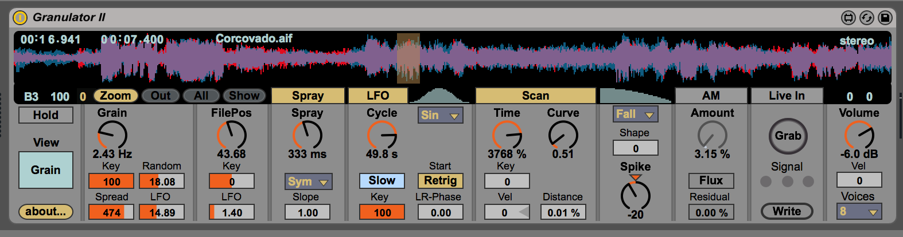
Lisätään Granulator omalle raidalleen, dragataan ylläoleva sample siihen ja lähdetään metsästämään kivan kuuloista pätkää draggailemällä hiirtä ympäri samplea.
Vasemmalla oleva Grain 2.43 Hz kertoo kuinka pitkä grain on käytössä, Spray 333ms kertoo että hypitään vähän ympäriinsä etsimässä sampleja kun koostetaan tuota jne.
Normisyntikan kanssa lähtee yleensä liikkeelle jostain ajatuksesta soundin kanssa, Granulatorilla etsitään onnekkaita yhteensattumia: niinpä kannattaa kokeilla eri parametreja ja samalla soitella nuotteja eri oktaaveista ja katsella löytyisikö jotain kivan kuuloista.

Lopulta löysin hauskan pätkän, mutta kun painan koskettimistolta C, soiva ääni onkin A. Korjataan siis Pitch -9st. Varmistetaan lisäksi että filtterit ja FM ovat pois päältä.
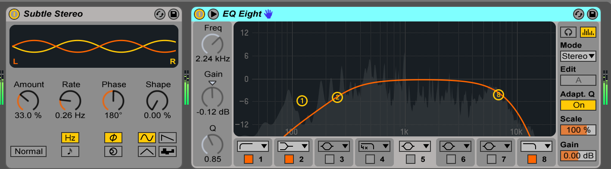
Lisätään vähän pyörintää stereokentässä ja leikataan alapäätä.
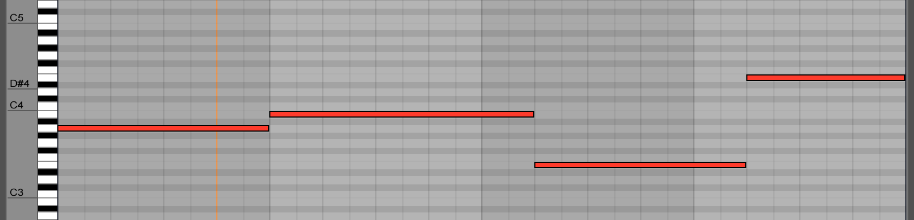
Triggeröidään meidän soundia vähän eri korkeuksilta.
Lopuksi lisäilin geneeristä komppia ja bassoa pohjalle.
Lisää granulaarisynteesistä: https://en.wikipedia.org/wiki/Granular_synthesis ja Granulatorista: http://monolake.de/technology/granulator.html
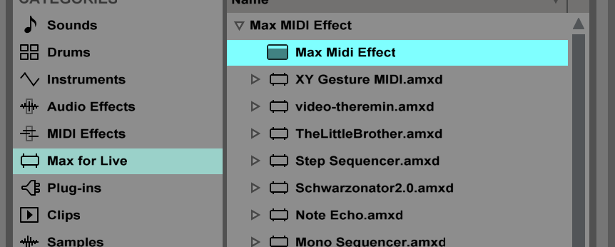
Nyt tehdään yksinkertainen Midi->Midi filtteri Max for Livellä. Aloitetaan lisäämällä uusi tyhjä Max Midi Effect.
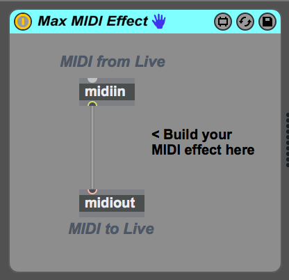
Oletuksena efekti heittää kaiken sisääntulevan midin sellaisenaan outputtiin. Klikataan Edit nappi ylhäältä, jotta pääsemme muokkaamaan efektiä.
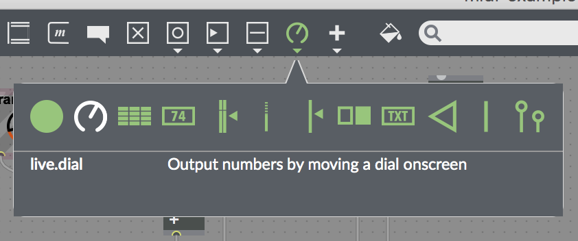
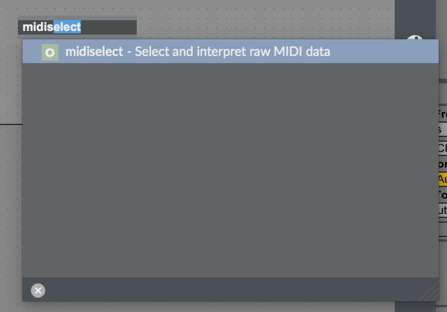
Painamalla n-näppäintä saadaan uusia funktiolaatikkoja joihin voidaan kirjoittaa kutsuttavien funktioiden nimet (ja mahdolliset fiksatut parametrit).
Otetaan sisääntulevasta mididatasta note on/off -eventit kiinni, lisätään niiden pitch-arvoihin dialilla valittu arvo ja paketoidaan ne takaisin midi-viesteiksi, jotka heitetään outputtiin.
Viestit joita emme valitse selectille (kaikki muut kuin note on/off) heitetään outputtiin sellaisenaan.
Tuunataan vielä inspectorista vähän asetuksia: laitetaan dialille kunnon nimi ja asetetaan sille Include in Presentation, joka tarkoittaa sitä että se tulee normaali-UI:ssa näkyviin.
Max-deviceillä on dev-tila ja presentation-tila. Dev-tilassa näkyy kaikki funktiot, reititykset jne. ja se on mihin tuo aukeaa oletuksena kun tekee uuden devicen. Presentation-tila on se mikä normaalisti halutaan näyttää loppukäyttäjälle.
Lopuksi klikataan itse paneelia ja kytketään sen inspectorista presentation-tila päälle, jotta tuo näkyy Livessä siinä.
Lopputuloksena on valmis plugin jolla voi transponoida sisääntulevan midin toiseen sävellajiin.
(Oikeasti tällaista ei toki kannattaisi rakentaa, vaan kannattaa käyttää Liven mukana tulevaa Pitch-efektiä, joka tekee ihan saman.)
Midi-efektien lisäksi tuolla voi toki rakentaa soittimia, audioefektejä, mitä vaan. Mukana tulee aika massiivinen kirjasto korkean tason rakennusblokkeja ja hyviä tutoriaaleja. Lisäksi minkä tahansa Max-devicen toteutusta voi itse tutkia avaamalla valmiin devicen edit-tilaan. Esim. täältä löytyy paljon http://www.maxforlive.com/library/ ja toki Liven paketeissa on myös useita.
Esim. Granulator näyttää korkealla tasolla tältä. Siniset laatikot ovat funktioita joita voi sitten avata taas auki.
Esim. tuo p LFO-laatikko näyttää avattuna tältä.
Teinpä yhden raakileen: http://komu.kapsi.fi/k-minor/ark.mp3 Ajattelin, että jos tekisi jotain väkisin, joten pistin dawiin tyhjän ABABCB-rakenteen ja sitten runnoin. slightly_smiling_face Voisin vielä viimeistellä tuon ja purkaa sen osiin jos kiinnostaa.
egaga ♫
joo kyllähän ton biisin purkaus kiinnostaa
Tänään syntetisoidaan bassorumpu.
Olen haastanut itseni tekemään kokonaisen biisin käyttäen pelkästään Operatoria. Haluan siihen kuitenkin rummut, joten teen nekin Operatorilla. Aloitetaan bassorummulla.
Aloitetaan lisäämällä raidalle Operator ja sen jälkeen vielä Spectrum, jotta näemme mitä aaltomuodolle tapahtuu. Kytketään Operatorin oskillaattorit C ja D pois, koska emme tarvitse niitä. Sen jälkeen vaihdetaan A Fixed tilaan ja laitetaan taajuudeksi 100Hz. Näin soittamillamme nuoteilla ei ole mitään merkitystä äänen korkeuden kannalta. Soitetaan jotain nuotteja. Eipä kuulosta bassorummulta, vaan pelkältä siniaallolta.
Klikataan oskillaatorin A paneelia niin että keskipaneelissa päästään muokkaamaan sen amplitude envelopea. Laitetaan Sustain: -inf dB ja säädetään vähän muitakin arvoja. Nyt ääni syntyy tosi nopeasti ja häipyy sen jälkeen itsekseen. Ei tämä vieläkään bassorummusta mene, mutta jotain ajatusta alkaa selvästi olla.
Muutetaan nuotin korkeutta ajan myötä. Kytketään pitch envelope Kytketään se päälle, Asetetaan 62% envelopen intensiteetiksi ja säädetään envelope niin että se menee nopeasti oktaavista ylös neljään oktaaviin ja tippuu sieltä alas -31 askeleeseen. Nythän tämä kuulostaa jo bassorummulta! Ei toki oikealta bassorummulta, mutta sellaiselta joka voisi löytyä elektronisesta biisistä.
Kopioidaan oskillaattorin A asetukset oskillaattoriin B.
Asetetaan oskillaattoreille eri taajuudet, nostetaan molemmat -0 dB tasolle ja lasketaan koko devicen volume -12dB. Klikataan keskipaneelin yläreunan oikeanpuolimmaisinta nappia jotta oskillaattorit saadaan rinnan. (Oletuksena B tekisi FM-modulaatiota A:lle, mikä ei ole sitä mitä nyt halutaan.) Lisätään vielä low-pass-filter, jolla leikataan ylimääräisiä korkeita taajuuksia pois.
Lisätään perään vielä kohtuu maltillinen kompressori.
Normaalisti käyttäisin NI:n Transient Masteria rumpujen muokkaamiseen, mutta nyt rajoitun Liven stock-plugineihin ja kompressori on se klassinen tapa säätää näitä.
Lopuksi groupataan koko juttu yhdeksi kokonaisuudeksi. Groupin voi nimetä vaikka Operator kick ja sitten tallentaa presetiksi kirjastoon. Eri parametreja (esim. tuon äänenkorkeuden) voisi mäpätä makroihin, mutta en nyt mene siihen.
Jos noita makroja lähtisi mäppäilemään, niin varmasti noi velocityjen decay/release -ajat olisivat hyvä kandidaatti, niin voisi yhdellä vivulla kontrolloida onko tuo tiukka vai “boomy”.
Ja jos @slack_käyttäjä on vielä kiinnostunut audio-juttujen ohjelmoinnista, niin tämän äänen ohjelmointi voisi olla ihan hauska projekti. Jos unohtaa filtterit ja kompurat, niin ei paljon simppelimmäksi mene: kontrolloidaan parin eri siniaallon volumea ja äänenkorkeutta käyrän mukaan.
kope ♫
Kyllä se projekti tuossa taustalla on...
Pyysin Kansalliskirjaston Arton myös tänne single-channel guestina, koska on Arton kanssa puhuttu paljon musajutuista ja nämä asiat kiinnostivat Artoakin.
arto ♫
slightly_smiling_face heippa maailma
egaga ♫
moro vaan
Jatketaanpa eilistä projektia hihatin tekemisellä. Tämä onkin simppelimpi kuin bassorumpu.
Aloitetaan lisäämällä uusi operator, disabloimalla oskillaattorin B-D ja vaihtamalla A-oskillaattorin aaltomuoto kohinaksi.
Laitetaan Sustain: -inf dB ja Decay: 123ms_. Nostetaan vielä oskillaattorin taso 0dB:hen.
Nyt ollaan jo aika lähellä, kunhan valitsee soitettavan nuotin oikein. (Toisin kuin edellisessä esimerkissä, nyt ei käytetty fiksattua taajutta joten soittamalla eri nuotteja saa vähän erilaisia ääniä pihalle.)
Alapäätä on kuitenkin vähän liikaa, joten lisätään 24dB:n high-pass filter, joka leikkaa taajuudet ~8 kHz:n alta. Leikitään vielä resonanssilla niin että saadaan kivan kuuloinen piikki.
Nythän tämä on jo aika hyvä.
Lisätään kuitenkin perään vielä vähän saturaatiota (säädetty vain Drive-parametria) ja reverbiä (säädetty Decay time ja Dry/wet).

Valitaan kaikki kolme deviceä, isketään cmd-G jotta saadaan group ja mäpätään muutama parametri makroihin: Operatorin decay ja resonance, Saturatorin drive sekä Reverbin Dry/Wet.
Isketään vielä groupin Map-nappia, jotta päästään rajoittamaan makrojen rangeja niin että vain subset alueesta on käytöstä. Esimerkiksi. 10 sekunnin decay ei olisi mitenkään järkevä ja tekisi tuon automatisoinnista vaikeampaa kääntelee sitten potikoita tai piirtelee käyriä.
Makrojen lisääminen resetoi kaikki parametrit nollaksi, säädetään ne kohdalleen järkeviksi arvoiksi.
Näin syntyi hihat jonka soundia voi vielä vähän muokata makroilla. Jos Decay on lyhyt, niin tuo on suljettu, jos sen kääntää puolen sekunnin tienoillel, niin saadaan avoin hihat.
Sekä bassorumpu että hihat näitä ohjeita seuraamalla pitäisi muuten onnistua käytännössä millä tahansa syntikalla, näissä ei ole käytetty mitään Operatorin hienouksia.
Tein nyt samaan hätään snarenkin, joka on oikeastaan vain yhdistelmä kahta edellistä: siinä on rumpu joka tehdään samalla tekniikalla kuin bassorumpu ja matto joka tehdään samalla tekniikalla kuin hihat.
Oskillaattori A on rumpu: otetaan taas siniaalto jolle tehdään tiukka envelope.
Oskillaattori B on matto ja tehdään samalla tekniikalla kuin hihat. Noiden kahden keskinäisillä leveleillä ja decay-ajoilla kannattaa leikkiä kunnes löytää arvot joista tykkää.
Lisätään taas pitch envelope, mutta enabloidaan se vain A-oskillaattorille.
Lisätään perään reverb; decay ja dry/wet -arvoja säädetty.
Lopuksi vielä kompressori. Tällä luodaan aika suuri osa soundia. Kannattaa leikkiä etenkin thresholdilla, mutta myös ratio, attack, release -arvoilla kunnes saa haluamaansa.
Lopuksi taas paketoidaan groupiksi ja voidaan assignoida makroja arvoille joilla halutaan leikkiä.
Paketoidaan vielä kaikki rummut yhdeksi kokonaisuudeksi.
Tehdään uudelle kanavalle uusi drum rack ja dragataan devicet rackin slotteihin. Tämän jälkeen avataan I-O tabi.
Vaihdetaan Snaren soittamaksi nuotiksi A2, koska se kuulostaa järkevämmältä.
Laitetaan molemmat hatit choke groupiin 1. Tämä tarkoittaa sitä, että jos toinen noista soi kun tulee isku toiselle, niin se soiva sammutetaan. (Eli avoin hat ei voi jäädä soimaan jos isketään suljettua hattia.)
Kokonaisuudelle voisi taas mapata makroja, mutta jätän sen nyt väliin.
Lisätään glue compressor rumpukanavalle sitomaan rummut yhteen.
Kun kaikki instrumentit ovat yhdessä rackissa, voi rumpubiitin tehdä näppärästi suoraan yhdeksi clipiksi sen sijaan että tarvitsisi laittaa niitä eri kanaville.
Rackiin voisi instrumenttien lisäksi kiskoa toki myös sampleja. Se varmaan onkin yleisempi tapa käyttää sitä.
Päivitin tuon esimerkki-mp3:n niin että siinä on snare mukana. Noi soundit vaatisivat vielä viilausta, mutta perusidea rumpujen syntetisointiin tuli varmaan selväksi tästä. Joka tapauksessa mulla on nyt itselläni pohjalla rack, jota voin lähteä viilaamaan Operator-biisiä tehdessäni.
Tuli parissakin kohdassa aiemmin viitattua siihen kuinka kompressorilla voi säätää rumpujen transientteja halumaansa suuntaan, mutta en selittänyt sitä sen tarkemmin. Nyt selitys.
Yllä näkyy sama snare-isku kolmeen kertaan ja ko. kanavan kompressorille tehdyt attack/release -automaatiot. Ylemmän kanavan output on äänitetty alemmalle kanavalle, jotta kompressorin vaikutukset näkee kuvassa.
1. Lyhyt attack, lyhyt release: kompressori vaimentaa signaalia heti iskun tullessa, mutta lyhyt release lopettaa vaimennuksen samantien. Tuloksena on tasapaksu soundi, jossa alun kova transientti ei erotu muusta iskusta erityisesti.
2. Lyhyt attack, pitkä release: kompressori vaimentaa taas signaalia heti, mutta release pitää vaimennuksen tason yllä koko iskun ajan. Tuloksena on suunnilleen alkuperäisen signaalin muotoinen käyrä. Jos inputissa olisi monta iskua eri volumeilla, iskujen keskinäiset dynamiikkavaihtelut pienentyisivät niiden soundin häviämättä.
3. Pitkä attack, pitkä release: iskun tullessa kompressori rupeaa vaimentamaan iskua hitaammin, vaimennus kestää koko iskun ajan. Tämä aiheuttaa sen, että vaimennus pääsee kunnolla vauhtiin vasta kun alun transient on mennyt jo ohi. Näin kompressori tekee tuosta transientistä vieläkin korostuneemman suhteessa muuhun iskuun.
(Koko samplen pituus oli 100ms, lyhyt attack 0.02ms, pitkä attack 0.13ms, lyhyt release 1ms ja pitkä release 181ms.)
Samat säännöt toimivat toki minkä tahansa instrumentin kompressointiin. Vaikka kitaran komppauksesta voi korostaa transientteja tai pehmentää niitä.
Tosiaan itse yleensä käytän Native Instrumentsin Transient Masteria, koska se on erikoistunut vain ja ainoastaan tähän ja sen takia sen käyttöliittymä on yksinkertaisempi, mutta tuolla stock-compressorillakin pärjää ihan hyvin kun tietää mitä tekee.
No niin, leikin hetken aikaa Operatorilla ja sain kuin sainkin aikaiseksi kokonaisen biisin, jossa kaikki soundit tulevat Operatorista: http://komu.kapsi.fi/k-minor/operator.mp3 Muutenkin pelkkiä Liven stock-plugineja (paitsi master chainissa on disabloituna Isone luureilla miksaamista varten). Projekti löytyy täältä: https://splice.com/studio/E44E8AF5-8C9A-4C94-B5BB-25030BA74EE0
Enkä tosiaan käyttänyt mitään presettejä millekään soundille, vaan lähdin joka kanavalla liikkeelle Operatorin oletusasetuksista. Äkkiä tuohon pääsi sisään vaikkei ollut koskaan aiemmin tosiaan hirveästi leikkinyt tuolla.
Pikkuinen workflow-vinkki: kannattaa erotella aikaa eri aktiviteeteille. Voisi varmasti jakaa tarkemminkin, mutta mulla menee puuhailu karkeasti kolmeen osaan:
1) Biisien teko. Saattaa olla "kunnon" biisi, pienimuotoinen harjoitus tai vaikka vain 8 tahdin luuppi, mutta tarkoitus on kuitenkin tehdä musiikkia. Tätä voisi toki jakaa vielä osiin muttei mennä siihen.
2) Äänisuunnittelu. Leikin syntikoilla, efekteillä, jne. ilman että tarkoituksena on tehdä biisejä. Kun löydän mielenkiintoisia ääniä, tallennan presetit jotta voin käyttää niitä myöhemmin. Lisäksi tämä on tietysti hyvää harjoitusta. Aika usein menee kyllä siihen että olisi tarkoitus tehdä tätä, mutta sitten inspiroiva soundi johtaakin siihen että löydän itseni tekemästä biisiä.
3) Muu työkaluilla leikkiminen/opiskelu. Toisin kuin edellisessä, tarkoitus ei ole saada aikaiseksi uusia presettejä vaan tutustua eri työkaluihin ja tekniikoihin. "Koitanpa tehdä kasarityylisen gated reverb -efektin snareen", "Opiskelen mitä Saturator tekee eri asetuksilla eri soundeille", "Opettelen tekemään asian X Pushilla", "Opiskelen joukon uusia näppäimistöoikoteitä" jne. Eli ehkä juuri sen tyyppistä juttuja joita olen tänne laittanut.
Jos yrittää keskittyä pelkästään biisien tekoon, niin helposti loppuu tekniikka kesken.
Toi auttaa myös siihen, että jos huomaa ettei ole juuri nyt inspiraatiota biisin tekoon, niin on kuitenkin pakko muuta mitä voi tehdä/leikkiä. smiley
egaga ♫
tohon liittyen ajatus: kun @slack_käyttäjä kanssa ollaan muutama kerta reactia harjoiteltu, niin tulee vastaan kaikenlaista ihmettelyä, esim. typescriptin/webpackin/best practicen/idean asetuksien kanssa.
kannattaa kirjoittaa ylös ne ihmettelyn aiheet ja palata niihin. tosin meidän tapauksessa kun on kaksi heppua niin voi toinen jatkaa perusasian eteenpäin viemistä kun toinen vaikka hakee lisätietoa / varmistaa että on ymmärretty oikein
ehkä pätee myös yo. workflowhon. eli jos on jonkin mainitun osan tavassa tekemässä, niin kun alkaa mennä liikaa rajan yli, niin pistää ylös. että välttää sen että alkaa pomppoilla osien yli tai että ei enää muistakaan myöhemmin
Tuota ekaa voisi ehkä vielä purkaa sen verran että sen alla iso juttu mulla on erilaiset pikkuiset tutkielmat (etydit): "kuinka moduloida sujuvasti etäiseen sävellajiin, esim. Cm -> Gbm", "kuinka rakentaa house-raita", "kanavoidaan Philip Glassia" jne.
Joo, muistiinpanot ovat hyvä ajatus.
Ja tosiaan jonkinlainen itsekuri on ehkä ihan hyvä. Ei se nyt toki väärin ole jos huomaakin itsensä taas kohdasta 1), mutta mulla meinaa hirveän helposti karata siihen ja lopputuloksena on se, etten oikein saanut kehitettyä osaamista tai soundipankkiani enkä kuitenkaan saanut mitään kunnon biisiäkään, koska ei kuitenkaan ollut oikeaa ideaa vaan vain soundi jolla oli kiva jammailla hetki.
Eli yritän ainakin hetken aina vastustaa kiusausta siirtyä biisin tekoon jos oli tarkoitus tehdä muuta. Mutta en nyt niin hirveästi pistä vastaan, koska leikkiä tämä kuitenkin vain on.
Vähän sama kuin soitintenkin kanssa. Jos on tarkoitus opiskella bassolla tiettyä asiaa, niin on hyvä välttää kiusausta ruveta vain soittelemaan juttuja jotka osaa.
Musiikkia tehdessä olisi syytä työskennellä melko hiljaisilla tasoilla. Kaikki kuulostaa paremmalta kovalla, joten jos kuuntelee koko ajan kovalla, niin antaa itselleen liikaa anteeksi. Toisaalta korvat väsyvät nopeammin kovaan ääneen ja pian menettää viimeisetkin objektiivisuuden rippeet sen suhteen mitä kuulee.
Toisaalta välillä on hyvä kuunnella vähän kovempaakin ja varmistaa että kaikki kuulostaa järkevältä myös niin.
Lisätään master-kanavan loppuun Utility joka laskee signaalin tasoa -6dB ja annetaan sille nimeksi -6dB.
Isketään cmd-k, jotta päästään antamaan sille näppäimistömakro, klikataan hiirellä devicen virtanappia ja sen jälkeen näppäintä johon halutaan bindata (mulla §).
Lopuksi mennään asetuksiin Save Current Set as Default -kohtaan ja klikataan Save, jotta nykyinen projekti tallennetaan templateksi kaikille uusille projekteille.
Nyt voi kuunnella kohtuu hiljaisella ja §-näppäimellä saa togglattua itselleen sitten helposti 6dB lisää.
Kaikille deviceille voi myös tallettaa omat defaulttinsa jotka tulevat kun devicen lisää raidalle. En ole noita muuten säätänyt, mutta olen pistänyt noille deviceille parhaan laadun oletuksena päälle. Eli esim. EQ:lle voi valita popupista Oversampling ja sen jälkeen Save as Default Preset jolloinka tulevaisuudessa saa oletuksena EQ:n jolla on Oversampling päällä. Vastaavasti esim. Saturator sisältää Hi-Quality -togglen.
Lopuksi voi vielä customoida templaten projekteihin lisättäville uusille raidoilla. Eli voi tehdä uuden raidan joka on halutun näköinen ja sen jälkeen sanoa sille Save as Default MIDI/Audio Track. Nyt cmd-t ja cmd-shift-t lisäävät suoraan raitoja joilla on omat setupit tehtynä.
Esimerkiksi mulla tulee kaikille raidoille automaattisesti Compressor, EQ ja Utility disabloituna ja foldattuna. Niitä tulee tarvittua sen verran usein, että on kiva ettei tarvitse ruveta erikseen metsästämään vaan voi vain unfoldata ja enabloida.
Puran sitä ark-biisiä, kuten lupasin. Käytin siinä alunperin aika paljon NI Kompleten soundeja (bassot, rhodes, torvet, rummut), mutta tein version jossa on Live Suiten basso + rhodes ja bounsasin rummut ja torvet audioclipeiksi. Joten nyt sen saa auki ilman Kompletea auki ja sillä voi leikkiäkin. Täältä löytyy: https://splice.com/studio/B9BCDC58-1322-4961-A371-274111B49EB3
Rakenne on siis näinkin yksinkertainen. Koska toi on aika kiireessä kasattu, niin suurin osa koostuu 8 tahdin palikoista. Jos nyt lähtisi työstämään tästä eteenpäin, niin tietysti lähtisi tekemään noihin vähän variaatiota, fillejä jne. Ja sitten jotain ylimääräisiä efektielementtejä jne. Ja eri osien transitioihin pitäisi lisätä jotain hämäystä kuulijalle viemään huomion. Nythän toi vain töksähtää A-osasta B-osaan ja päinvastoin.
Rumpuihin olen aika tyytyväinen, niissä tapahtuu koko ajan jotain pientä. Voisi toki tapahtua enemmänkin.
Alunperin tosiaan käytin Scarbee Jay-Bassia (http://www.native-instruments.com/en/products/komplete/guitar/scarbee-jay-bass/), mutta laitoin nyt tuohon versioon Live Suiten oman basson (https://www.ableton.com/en/packs/guitars-and-bass/).
Toi basso on jännä multisämplätty makropaketti, jossa soitettavan samplen valintaan vaikuttaa niin Articulate-napin valinta, nuotin korkeus kuin myös nuotin velocity. (Scarbee Jay-Bass lisäksi skriptaa sen missäpäin kaulaa soittajan käsi menee, on samplannut erikseen sormen releaset yms.)
A-osan bassoriffi on tällainen. On hyvä huomioida, että tuolla on noita voimakkuudeltaan tosi hiljaisia nuotteja mukana. Ne triggeröivätkin tuolle bassolle ghosteja (eli kieli on dempattu vasemmalla kädellä ja oikea käsi näppäilee kuolleita säveliä), jotka ovat tuon grooven kannalta oleellisia.
A-osan bassossa articulate on 58, joka tarkoittaa sitä että basso soittaa velocitystä riippuen avoimia tai glidattuja nuotteja.
Äh, eka nuotti jäi kuvasta pois koska se on niin ylhäällä..
B-osassa articulate on 0, joka tarkoittaa sitä että toi on peukkubasso. Matalat nuotit peukkua, korkeat nuotit poppia. Hiljaiset nuotit ovat taas ghosteja.
Scarbee osasi tehdä noille yhteen sidotuille nuoteille vielä hammer-on/pull-off -juttuja, mutta toi Liven basso ei ymmärrä niitä, joten tämä ei kuulosta läheskään niin fiksulta kuin alkuperäinen.
Tosiaan tuossa Scarbeen bassossa on yli 2 gigaa sampleja yhdestä bassosta ja joukko skriptejä jotka valitsevat niitä soiton perusteella. Melkein minkä tahansa artikulaation saa pihalle. Olen basistinakin niin tyytyväinen että usein käytän tuota sen sijaan että soittaisi itse.
Etenkin jos pitää tehdä jotain Akin nukkuessa. smiley
Rhodes soittaa paljon lyhyitä sointuja joissa on seiskoja ja ysejä. Aika liberaalisti sekä reverbiä että delaytä, jotta saadaan tuosta mattoisampi.
Rhodeksen edessä on Max Humanizer, koska olin liian laiska hienosäätämään nuotteja käsin pois gridistä.
A ja B-osan melodiat olivat ihan vain jotain pentatonista improvisaatiota, johon oli sitten lisätty vähän muitakin nuotteja. Pari lyhyttä ideaa ja variaatioita niistä.
Rumpukomppi on tuollaista perus 1/16-funkkia. A-osassa hihat kiinni, B-osassa auki. Fillejä aina väliin.
Torvet nyt on vain jotain, en ehtinyt niitä oikeastaan edes ajatella sen kummemmin.
Mutta tuossapa tuo näin äkkiseltään avattuna, jos on kysyttävää, niin voi kysyä. Tosiaan tästä jos jaksaisi viedä eteenpäin, niin voisi lähteä lisäämään variaatiota niin ettei missään instrumentissa olisi koskaan täysin identtistä 8 tahdin pätkää, tekemään vähän automaatiota niin että eri instrumentit tulevat vuorotellen esiin ja menevät taas taustalle (aika paljon voi instrumenteille tehdä ilman että kuulija edes tajusi kiinnittäneensä huomiota johonkin sen takia että miksaaja oli päättänyt että nyt siihen olisi tarkoitus kiinnittää huomiota), lisäämään kaikkia pieniä one-time eventtejä jne.
@slack_käyttäjä, tarpeeksi avattu? Projektitiedosto varmaan vastaa toki kysymyksiin myös.
Niin joo, prosessista vielä. Lähdin liikkeelle sillä, että rämpyttelin kitaralla sointuja ja päädyin A-osan kulkuun C#m7, Amaj7, F#m7, Ebm7-5, Gb7alt. Nauhoitin sen ja laitoin päälle rummut ja basson, sitten poistin kitaran ja pistin rhodeksen.
B-osaan ei ollut mitään ideaa vaan brute forcetin sen vaan että saa jotain. Melodia siinä yllätti myönteisesti. smiley
Niin joo, rhodeksesta vielä: siinä on paljon nuotteja ja vaihteluita yhden soinnun aikana, mutta ne ovat vain samojen 7/9-sointujen käännöksiä. En viitsinyt tuossa tempossa lähteä monimutkaistamaan harmoniaa millään välisoinnuilla ettei mene basson kanssa ristiin. (Over-biisissähän piano soittaa "varsinaisten" sointujen lisäksi paljon muitakin sointuja.)
Eri käännösten käyttö on helppo tapa lisätä vähän liikettä jos sointu tuntuisi muuten olevan paikallaan liian kauan.
No niin, koko biisin tekeminen pelkällä Operatorilla oli vaikeusaste 1, nyt vaikeusaste 2.
Eilen illalla tuli mieleen että kaipa sitä voisi tehdä kokonaisen biisin yhtä samplea leikkelemällä ja manipuloimalla. Nyt sain valmiiksi. Ihan alussa tulee muutaman sekunnin sample josta ihan kaikki biisissä oleva on johdettu. http://komu.kapsi.fi/k-minor/se-tudo.mp3
arto ♫
hienointa tuossa on se, että lopputuote kuulostaa pikaiselta bossa novalta slightly_smiling_face
Kerrotaan nyt vielä salaisuudet:
- 1 Original: alkuperäinen sample, lopussa pätkitty lyhyihin pätkiin ja isketty dub-kaiku päälle
- 2 Clips: samplesta erilaisilla kaiku/filtteri/dädä -komboilla nauhoitettuja clippejä
- 3 Beat: sample pätkitty 1/16-nuotteihin joita on sitten pistetty gridiin joksikin rytmiseksi jutuksi
- 4 Reverb: sample vedetty täysin märän 60 sekunnin reverbin läpi ja syntyneen maton päälle tehty efektiautomaatiota
- 5 Bass: Granulatorilla alkuperäisestä samplesta poimittu lyhyt pätkä joka on bouncattu sampleriin ja soitettu sillä
- 6 Pad: Granulatorilla otettu pätkä taas bouncattu sampleriin ja soitettu sillä
- 7 Vocoder: sample pätkitty 1/8-nuotteihin joita trigattu ihan randomilla, menee vocoderin läpi jossa moduloi itseänsä. päällä vielä filter-delay joka iskee eri taajuuksia eri delayllä oikealle ja vasemmalle.
Lisäksi melkein kaiken päällä on aika paljon LFO:lla tehtyä rytmistä automaatiota ja sitten tietysti noi näkyvät käyrät. Ja pirusti kaikua kaikkialla. slightly_smiling_face
Monessa efektissä on itsessään dry/wet-controlli, jolla voi säätää missä suhteessa lopputulokseen miksataan alkuperäistä kuivaa signaalia ja missä suhteessa prosessoitua signaalia.
Kaikissa efekteissä ei kuitenkaan ole säätöä tähän tai joskus halutaan pistää monta efektiä peräkkäin ja halutaan kontrolloida niiden suhdetta kuivaan signaaliin.
Efektiräkki mahdollistaa miksaamisen yhdellä säädöllä. Lisätään siis uusi tyhjä Audio Effect Rack ja lisätään siihen kaksi chainiä context-menusta.
Nimetään kaksi lisättyä kanavaa Dry ja Wet. Klikataan Chainnappia, jotta oikealle avautuu chain-selector. Kiskotaan vasemmassa reunassa olevat pienet siniset palkit koko leveydelle. (Kuvassa alemman palkin draggays on vasta kesken.)
Dragataan isojen palkkien yläpuolella olevat pienet palkit niin että isoon palkkiin tulee crossfade. Tämä kertoo sen, että kun chain-selector (oranssi palikka nollan kohdalla) on vasemmalla, ylempi kanava miksataan täysillä ja alempi on hiljainen. Vastaavasti kun chain-selector on oikealla, alempi miksataan täysillä. Chain-selectoria voi kiskoa hiirellä.
Selectorin kiskominen hiirellä ei ole hirveän näppärää joten mäpätään se makroon.
Piilotetaan chain-selector, nimetään makro-nappi ja samalla koko rack.
Vaikka rack ei tällä hetkellä tee mitään järkevää (koska molemmat ketjut ovat tyhjiä), se on kuitenkin hyvä pohja tulevaisuuden efektiketjuille ja kannattaa tallettaa kirjastoon tällaisenaan. Eli klikataan save-ikonia ja tallennetaan rack.
Nyt sitten käytetään rackia johonkin. Eli etsitään kirjastosta valmis rack ja lisätään se kanavalle, klikataan vasemmalta alinta nappia, jotta saadaan device-lista näkyviin. Valitaan Wet-ketju ja dragataan efektejä oikealla olevaan alueeseen.
Lisätään efektiksi vaikkapa Reverb. Käännetään reverbin oma Dry/Wet 100%, koska Wet-kanavalle haluamme pelkkää efektiä.
Lisätään reverbin jälkeen vielä EQ, joka leikkaa alle 300 Hz:n taajuuksia. (Reverb saattaa helposti aiheuttaa mutaa alataajuuksille, joten tämä on usein ihan hyvä kikka.)
Mäpätään vielä EQ:n cutoff ja reverbin decay-time makroihin ja piilotetaan ylimääräiset asiat pois näkyvistä.
Lopputuloksena on palikka jossa voi helposti säätää reverbin aikaa, filtterin cutoffia ja suhdetta jossa kuivaa ja reverb-signaalia miksataan yhteen. Ja lisäksi meillä on valmis dry/wet-palikka, jota voi käyttää pohjana muille vastaaville ketjuille.
Aika usein tulee vastaan tilanne, jossa haluaa verrata kahta eri versiota efektistä. Eli jos meillä on raidalla vaikka reverb, voimme iskeä cmd-d joka duplikoi sen, muokata jälkimmäistä reverbiä ja pistää sen pois päältä.
Sitten voi kytkeä ekan pois päältä ja jälkimmäisen päälle. Jos tekee pikkuisia muutoksia, on kuitenkin vähän työlästä togglata noita kahdella hiiren klikkauksella (puhumattakaan siitä, että kun vaihdoksessa kestää kauan, on hankalampi havaita pieniä muutoksia).
Isketään siis cmd-k, jotta päästään iskemään näppäimistömakro. Painetaan ensin reverbin toisen virtanappia ja painetaan jotain näppäintä. Sitten painetaan toisen reverbin virtanappia ja painetaan samaa näppäintä uudestaan. Sitten isketään uudestaan cmd-k, jotta päästään mäppäystilasta pois.
Nyt valitun näppäimen painaminen togglaa molemmat efektit kerralla joten on helppoa vaihtaa niiden välillä.
Iskemällä cmd-k uudestaan saa mäppäykset näkyviin ja pääsee poistamaan mäppäykset joita ei enää halua. Harrastan aika paljon tuollaisia väliaikaisia mäppäyksiä jotka teen yhden jutun säätämistä varten ja poistan sitten kun homma on valmis.
Näppäimiä voi bindata myös komponentteihin joilla valitaan arvoja. Tietenkään yhdellä näppäimellä ei voi valita tarkkaa arvoa, mutta näppäimistöä voi käyttää hyppimiseen kahden valitun arvon välillä kun asettaa min/max -arvot kohdalleen.
Aiemmin oli puhe efektien grouppaamisesta, mutta toki instrumenteille voi tehdä samoin. Kuvassa klassinen preset, jossa on piano ja jouset vierekkäin niin että kaikki midi menee molemmille. Jousien tasoa on laskettu 3dB hiljaisemmaksi, jotteivat ne peitä pianoa.
Sitten klassinen keyboardin splittaus. Kaikki C2:n vasemmalla puolella oleva menee bassolle, oikealla puolella oleva pianolle. Jotta bassolla voitaisiin kuitenkin soittaa C2-oktaavissakin olevaa kamaa, basson chainiin on lisätty Pitch +12 midi-efekti.
Normaalisti toki kannattaisi tehdä vain kaksi eri raitaa eri instrumenteille, mutta tämä on näppärää jos haluaa soittaa keyboardilla useita instrumentteja yhtä aikaa.
Piano on laitettu kahteen kanavaan: toiseen sellaisenaan ja toiseen niin että perässä on särö ja autowah. Hiljaisemmat nuotit menevät ainoastaan kuivalle pianolle, kovaa soitettuihin nuotteihin tulee säröä mukaan.
Neljä eri instrumenttia on laitettu eri chaineihin ja LFO-device vaihtaa seuraavaan instrumenttiin kolme kertaa tahdissa.
http://komu.kapsi.fi/ableton-examples/ -> instrument-racks (https://splice.com/studio/61691297-F873-40A2-BB8C-5F791855455D) soittaa neljä tahtia kutakin noista neljästä esimerkistä.
Viimeisestä nyt vielä sen verran kommenttia, että toki toi LFO:lla pyörivä instrumentinvaihto oli lähinnä hupsuttelua (vaikka yllättävän järkevältä se kuulostikin), mutta toi instrumenttien vaihtaminen noin on ihan hyvä tekniikka kun tekee hocketing-juttuja (https://en.wikipedia.org/wiki/Hocket). Voi ensin soittaa/kirjoittaa melodian kerran ja sen jälkeen leikkiä automaatiolla (joko kuunnella laulua ja nauhoittaa knobin vääntöjä samalla tai sitten piirrellä käyriä) instrumenttien vaihdoille. Huomattavasti helpompaa kuin nuottien siirtäminen raidalta toiselle jos haluaa testailla erilaisia ajoituksia vaihtoihin.
Ja vielä sellainen huomio, että kun lisää instrumenttirackin, niin mikserissä saa avattua kanavan auki niin että rackissä olevat instrumentit näkyvät suoraan siinä.
<Ladattu ei-kuvatiedosto>
Päivän hupsutteluna tehdään satunnaista mattoa chillout-raidan pohjalta. Tein YouTubeen haun “chill flute” ja löysin tällaisen raidan:
Imuroin mp3:n http://www.youtube-mp3.org/ -palvelun avulla ja kiskoin mp3:n Simpleriin.
Laitoin Simplerin Slice-modeen. Tämä etsii automaattisesti transientit samplesta ja mäppää ne peräkkäisiin nuotteihin (vasemman laidan lippu kertoo mikä on ensimmäinen sample ja siitä eteenpäin jokainen transient menee aina seuraavaan nuottiin, maksimissaan 64 sliceen asti). Jätin lipun ihan alkuun, jotta sampleja poimitaan alkupäästä.
Kasvatin Fade In sekä Fade Out -arvoja, jotta samplet eivät töksähdä niin pahasti.
Laitoin Simplerin eteen vielä Arpeggiatorin ja Randomin.
Arpeggiator muuntaa pohjassa pidetyt nuotit 1/16-nuoteiksi. Random perässä arpoo nuotin tilalle jonkun muun.
Näin saan pihalle satunnaisia 1/16 nuotteja niin kauan kuin pidän kosketinta pohjassa. Nämä mäppäytyvät satunnaiseen sliceen alkuperäisessä samplessa ja sopivalla samplella efekti on aika kiva.
Loppuun laitoin vielä reverbin ja delayn rinnakkain.
Kun nyt sitten tekee MIDI-raidan, jossa on vain yksi pitkä nuotti joka soittaa koko ajan (eli käytännössä pukkaa pihalle kokoajan niitä 1/16-nuotteja) ja samalla liikuttaa hiirellä tuota vasenta lippua, pääsee liikkumaan ympäri samplea ja etsitään löytyisikö jostain kohtaa jotain jota voisi käyttää käyttökelpoisena instrumenttina.
Tai sitten voi nauhoittaa tuota itse liikettä. Aloitin vasemmasta laidasta, siirtelin hiirtä pikkuhiljaa kunnes pääsin oikeaan laitaan ja sitten taas takaisin vasemmalle. Lopputulos oli tällainen: http://komu.kapsi.fi/ableton-examples/simpler-slicing.mp3
Tällä on aika vähän tekemistä alkuperäisen biisin kanssa vaikka se siitä onkin revitty. Ja jos tuntuu pahalta samplata toisten biisejä, niin voi samplata jotain omaa aiempaa biisiään tai sitten tehdä jonkun pätkän joka on tarkoitettu ainoastaan inputiksi tälle vaiheelle.
Parhaiten toimii tietysti joka materiaali, jossa soinnut eivät juuri vaihdu ja nuotitkin ovat pentatoniselta asteikolta. Näin kaikki pihalle tuleva on enemmän tai vähemmän harmonista.
Mutta tosiaan sen sijaan että yrittää tehdä mitään biisejä, toi on hyvä tapa metsästää yksittäisi kohtia joita samplata ja käyttää pohjana muille asioille. Kuten: http://komu.kapsi.fi/ableton-examples/simpler-slicing-sample.mp3
No niin, pakkohan mun oli hetki leikkiä tuolla ja tehdä muutaman tahdin pätkä: http://komu.kapsi.fi/ableton-examples/simpler-slicing-song.mp3 Nyt ollaan sen verran kaukana alkuperäisestä biisistä ettei kyllä hävettäisi enää yhtään sen samplaaminen.
<Ladattu ei-kuvatiedosto>
Tämähän ei enää liity Liveen mitenkään, mutta olisiko kiinnostusta sille, että kävisin läpi vähän harmonian perusteita? (Sointuasteet, funktionaalisuus, moodit, dominanttisuus, muunnesoinnut, tritonussubstituutio jne.) Eli ei mitään advanced jazz-kamaa, vaan ihan perusteita joiden päälle on hyvä rakentaa.
Vai onko ihan tuttuja juttuja? Noi ei loppujen lopuksi ole monimutkaisia asioita ja antavat paljon työkaluja.
egaga ♫
ei voi sanoa että olisin mitenkään sydämeen sisäistänyt, on noista tullut jotain lueskeltua, mutta unohtuu aika pian kun ei sovella koskaan. kyllä kiinnostaa siis. ajallisesti lagaan sun postauksia, että ei mikään kiire ole ainakaan
No, aloitetaan sitten moodeista eli kirkkosävellajeista, koska kaikki muu rakentuu sen päälle. Moodit ovat diatonisen asteikon päälle rakennettuja asteikkoja. Helpointa on ajatella niitä pianon valkoisten koskettimien kautta: jos soittaa pelkästään valkoisia koskettimia C:stä oktaavin verran ylöspäin, tulee soittaneeksi duuriasteikon eli joonisen moodin. Ja aloittaa A:sta, niin soittaa luonnollisen molliasteikon eli aiolisen moodin. Jos aloittaakin jostain muusta, niin saadaan vielä 5 muuta moodia.
(Käytän anglosaksista merkintätapaa, jossa H = B, koska se kaikki softat, jazz, pop jne. tekevät niin kuitenkin ja se on loogisempi.)
Eli tässä kaikki C-duurin moodit ja mitä eroa niillä on tavalliseen duuri- tai molliasteikkoon:
1. jooninen (normaali C-duuri)
2. doorinen (kuten d-molli, mutta 6. sävel on korotettu)
3. fryyginen (kuten e-molli, mutta 2. sävel on alennettu)
4. lyydinen (kuten F-duuri, mutta 4. sävel on korotettu)
5. miksolyydinen (kuten G-duuri, mutta 7. sävel on alennettu)
6. aiolinen (luonnollinen a-molli)
7. lokrinen (kuten b-molli, mutta 2. ja 5. sävel on alennettu)
Jos siis haluaa soittaa vaikka e-doorisen, niin voi pohtia mitkä ovat e-mollin sävelet (e, f#, g, a, b, c, d), mutta korottaa niistä vielä kuudennen, jolloinka saadaan (e, f#, g, a, b, c#, d). Nämä ovat tietysti samat sävelet kuin D-duurissa (tai sen rinnakkaissävellajissa b-mollissa). (Kitaran tai basson kanssa ei toki mietti säveliä vaan ainoastaan siirtää doorisen-moodin patternin alkamaan e:n kohdalta.)
Minkä takia sitten moodeja? Miksi että C-duurin toisen asteen soinnun (dm7) päälle voi soittaa d-doorisen (d,e,f,g,a,b,c) sen sijaan että vain sanotaan että soitetaan C-duurin säveliä (c,d,e,f,g,a,b)? Moodi auttaa keskittymään siihen mitkä ovat skaalan nuottien asteet (1: d, 2: e, 3: f, …) ja auttaa suhteuttamaan ne nimenomaan suhteessa soinnun pohjasäveleen. Doorisen ylennetty kutonen on fiilikseltään ihan erilainen kuin tavallisen mollin kutonen.
Moodien pohjalta voi rakentaa sävellajiin kuuluvat soinnut. Jos otetaan moodin 1., 3. ja 5. sävel, saadaan tavallisia kolmisointuja, ottamalla mukaan 7. sävel saadaan septimoisointuja. Kun jatketaan ja otetaan 9. (eli 2. sävel), niin saadaan ysejä jne. Eli C-duurissa on seuraavanlaiset septimisoinnut:
1. Cmaj7
2. dm7
3. em7
4. Fmaj7
5. G7
6. am7
7. bm7b5
Nämä voi kirjoittaa myös sävellajista riippumatta käyttäen vain astemerkintöjä:
1. Imaj7
2. iim7
3. iiim7
4. IVmaj7
5. V7
6. vim7
7. viim7b5
(Tai mahdollisesti vain I, ii, iii, IV, V, vi, vii koska muu on joka tapauksessa selvää asteiden pohjalta.)
Jokaisessa duurisävellajissa on siis kolme duurisointuja (I, IV ja V), kolme tavallista mollisointua (ii, iii, vi) ja yksi vähennetty molli (vii).
TL;DR Otetaan minkä tahansa sävellajin sävelet, mutta aloitetaankin soitto asteikon eri kohdasta, niin saadaan seitsemän erilaista asteikkoa. Kun otetaan moodeista joka toinen sävel mukaan (kasataan terssipinoja), niin saadaan muodostettua sointuja.
Jotta saisi vielä jotain oikeaa fiilistä siitä miltä eri moodit kuulostavat, pistin taustalle sointuja soimaan, iskin basson kiinni koneeseen ja nauhoitin kahdeksan tahtia improvisointia jokaisen moodin päälle: http://komu.kapsi.fi/ableton-examples/modes.mp3
Kannattaa kiinnittää huomiota moodien ominaisiin säveliin: doorisessa #6, fryygisessä b9, lyydisessä #4, miksolyydisessä b7, aeolisessa 6 ja lokrisessa b9 sekä b5.
Toi sooloilu ei nyt ole sellaista mitä normaalisti soittaisi näiden päälle, koska tavallisesti ei tietenkään ole pakko yrittää saada skaalan jokaista nuottia soitettua. Yritin tässä saada kompaktiin tilaan (8 tahtiin) määriteltyä skaalan täysin, vieläpä niin että korostan noita tiettyjä asteita, jotka tekevät skaalasta poikkeavan. Siksi noi on vähän korostetun eksoottisia. Yritin myös soittaa tarpeeksi hitaasti ja selkeästi artikuloiden, että tuota pystyy seuraamaan.
Toi on joka tapauksessa hyvä harjoitus: pistää taustalle joko pelkkä bassosävel tai kokonainen sointu ja sitten soittaa moodeja sen päälle, kuulostellen miltä mikäkin sävel kuulostaa bassoa vasten.
Jätän nyt aikaa sulatella näitä (ja esittää kysymyksiä) ennen kuin lähden eteenpäin. Tämä on kuitenkin tärkeä pohja, jonka päälle lähteä rakentamaan muita juttuja.
Itse asiassa jo pelkästään tämän pohjaltakin voi tehdä mielenkiintoisia juttuja: moni funk-biisi on vain jammausta doorisen moodin päällä ja 50-60 -luvuilla alkunsa saanut modaalijazz on hyvin pitkälti sitä, että sointuvyörytyksen ja harmonian läpi navigoinnin sijasta vähennetään sointujen määrää ja keskitytään improvisaatiossa tutkimaan niihin liittyviä skaaloja. Milesin Kind of Blue on hieno modaalinen levy ja Trane keskittyi pitkään modaalisiin juttuihin.
Oliko tämä about selvää?
Mutta tietyssä mielessä moodit ovat vähän kuin jotkut algebran määritelmät: yksinkertaisia juttuja jotka alunperin vastaantullessa hämmentävät: mitä iloa näistä on? Ne ovat kuitenkin tärkeä kommunikoinnin väline ja rakennuspala mielenkiintoisemmille jutuille.
Vastaava myös sikäli että on tärkeämpää ymmärtää konstruktio kuin muistaa nimi, mutta nimi auttaa puhumaan muille.
egaga ♫
joo, nyt on tullut/tulee muuton ja prahan reissun takia taukoa, että palaan asiaan kun joudan, mut nää asiat on kyllä houkutellut pitkään että osaisi
Joskus tulee tarve kirjoittaa tarkasti erikoisempia aika-arvoja. Toki gridin voisi kytkeä kokonaan pois päältä, mutta jos haluaa kaiken juuri täsmälleen kohdalleen, niin olisi helpompaa käyttää gridiä.
Gridin saa togglattua trioli-moodiin iskemällä cmd-3, mutta jos haluaa vaikka kvintoleita tai septoleita, niin se ei auta.
Ratkaisu on onneksi yksinkertainen. Jos halutaan tehdä kvintoli, niin merkataan ensin kuusi nuottia ja valitaan ne kaikki. Ylhäälle ilmestyy viimeisen nuotin eteen handle josta voi dragata. Tämän handlen draggaus lyhentää/pidentää kaikkia valittuja nuotteja saman verran ja siirtää niitä niin että ensimmäinen nuotti pysyy paikallaan.
Kun nuotit on dragatty sopivan mittaisiksi, viimeisen nuotin voi poistaa. Nyt meillä on viisi nuottia jotka menevät tasan kahteen iskuun.
Nuoteissa on usein tällainen merkintä, jolla kommunikoidaan sitä että biisissä on 1/8-swing. Painolla olevat 1/8-nuotit ovat 2 kertaa pitempiä kuin niitä seuraava nuotti. Kirjaimellisesti tulkittuna tämä olisi siis tiukka triolijako, mutta käytännössä rumpalit yleensä käyttävät muitakin jakoja kuin 2/3+1/3. Tätä suhdetta pääsee säätämään erilaisten sekvensserien swing-ratiolla.
Nyt hyödynnämme edellistä esimerkkiä ja teemme rumpuihin septoli-swingin, jossa nuottien suhteet ovat siis 4/7 + 3/7. Tämä on vähän kevyempi swing kuin raaka 2/3+1/3 ja tätä käytetäänkin aika paljon.
Tehdään siis kahdeksan nuottia, kiskotaan ne edellisen ohjeen mukaisesti niin että 7 nuottia täyttää yhden 1/4 tahdista ja poistetaan viimeinen nuotti.
Voisimme poistaa kaikki harmaana olevat nuotit, mutta olen ainoastaan disabloinut ne painamalla 0. Miksi näin? Koska noi ovat hyvissä paikoissa: kun haluan komppiin muita iskuja juuri noille paikoille, voin alt-dragata noita disabloituja nuotteja muille nuoteille ja sen jälkeen enabloida ne painamalla taas 0. Eli tuossa kompissa tulee ghost-kick ja ghost-snare jotka on tehty juuri tuolla tekniikalla.
Säädetään vielä nuottien velocityjä (cmd-drag) jotta saadaan eloa ja sen jälkeen duplikoidaan ja varioidaan tuota hieman.
Tehdään vielä vähän enemmän iskuja (ja ennenkaikkea enemmän hihatia) sisältävä versio tuosta.
Lopuksi heitin vielä päälle pari rhodes-sointua ja basson, jonka rytmi pohjautuukin normaaleihin trioleihin: tästä tulee hauska kontrasti.
Alussa on 4 tahtia ekaa komppia, sitten toiset 4 tahtia toista komppia.
Lopputulos: http://komu.kapsi.fi/ableton-examples/septuplet.mp3 ja https://splice.com/studio/ED271EE9-B79E-48D0-B747-55D21F8198B8
Sanottakoon nyt vielä, että toinen vaihtoehto on pistää kamaa normaaliin gridiin ja sen jälkeen applytä groove. Tässä on siis sama idea kuin swingien nuottikirjoituksessa: kirjoitetaan yksinkertaisempaa muotoa, mutta soitettaessa tehdään transformaatio.
Standardikirjastosta voi dragata clipille grooven (Packs > Core Library > Swing and Groove) ja sen jälkeen clip menee sen läpi. Painamalla valintalistan alla olevaa commit-nappia, Live muokkaa suoraan clipiä, niin että nuotit ovat siinä suoraan samassa muodossa kuin ne soitetaan. Niitä voi sitten vielä manuaalisesti muokata.
Jos taas soittaa itse jonkun rytmin ja haluaa applytä sen muihinkin soittimiin, niin clipille voi sanoa kontekstimenusta Extract Groove(s).
No niin, sitten taas teorian pariin. Viimeksi käytiin läpi moodit mutta vielä tarvitaan toinen joukko tylsiä, mutta sitäkin hyödyllisempiä määritelmiä.
Jokaisella sävellajin nuotilla on diatoninen funktio, joka on tavallaan sen looginen nimi. Eli jos sävellaji on C-duuri, niin F on C-duurin subdominantti, jos sävellaji onkin D-duuri, niin subdominantti on G. Tässä nuottien asteet, niiden funktiot ja niitä vastaavat nuotit C-duurissa:
I. toonika (C)
ii. supertoonika (D)
iii. mediantti (E)
IV. subdominantti (F)
V. dominantti (G)
vi. submediantti (A)
vii. johtosävel (B)
Jokaista tietysti vastaa myös sointu, jossa ko. nuotti on bassossa. Eli voin viivata medianttiin nuottina tai medianttisointuun, joka C-duurissa olisi tietysti em7 (fryyginen).
Miksi ylipäätään puhua moodeista kun voisi puhua vain näistä funktioista? Eikö mediantti ole aina fryyginen? Itse asiassa ei: duurisävellajin mediantti on toki fryyginen, mutta mollisävellajin mediantti onkin jooninen. Siinä missä moodit fiksaavat aina tietyn skaalan, funktiot ovat astetta suhteellisempi käsite. Eli otetaan esimerkiksi luonnollinen A-molli, kirjoitetaan sen funktiot ja niitä vastaavat moodit:
i. toonika - a-aiolinen
ii. supertoonika - b-lokrinen
III. mediantti - C-jooninen
iv. subdominantti - d-doorinen
v. dominantti - e-fryyginen
VI. submediantti - A-lyydinen
VII. johtosävel (tai yleensä luonnollisen mollin tapauksessa puhutaan subtoonikasta) - G-miksolyydinen
Eli meillä on eri tasoisia loogisia abstraktioita, jotka kiinnittävät eri määrän juttuja kiinni:
Eli jos sanon, että sointuni on duurisävellajin mediantti, tiedän että se on fryyginen. Jos sanon että se on D-duurin mediantti, tiedän että se on f#-fryyginen.
funktio - nuotin paikka ottamatta kantaa sävellajin tyyppiin
|
|———— kiinnitetään sävellajin tyyppi (duuri, luonnollinen/harmoninen/melodinen molli)
|
v
intervalli - nuotin absoluuttinen etäisyys suhteessa sävellajin pohjasäveleen
moodi
|
|———— kiinnitetään sävellajin pohjasävel
|
v
nuotti
Miksi sitten ylipäätään puhua jostain niin abstraktista asiasta kuin funktiosta, jos se ei edes kerro millainen sointu on kyseessä? Sen takia, että itse asiassa sekä molli- että duuri-sävallajeilla on paljon yhteisiä asioita joita voi kuvata nimenomaan funktion kautta. Suuri osa tonaalisesta musiikista perustuu nimenomaan toonikan, subdominantin ja dominantin väliseen vaihteluun ja tämä pitää paikkansa niin duurissa kuin mollissakin vaikka itse soinnut konkreettisesti ovatkin täysin erilaisia.
Itse asiassa voidaan mennä niin pitkälle, että voidaan sanoa että valtaosassa musiikkia on vain kolme funktiota, kaikkien muiden sointujen toimiessa sijaisena jollekin noista kolmesta soinnusta. Kuten jokainen basisti tietää, esim. subdominantin voikin korvata supertoonikalla ilman että rikkoo mitään: vain väri muuttuu hieman. Eli jos biisissä on “I-IV-V-1 == C-F-G-C”, voinkin soittaa “I-ii-V-I == C-dm-G-C”. Erityisen kivaa toi on sen takia, että koska dm7 = F/D, muu bändi voi soittaa F-duurin ja basso voi yksin muuttaa sen dm7:ksi. Mutta menen tarkemmin näihin myöhemmin, tämä oli vain etukäteiskurkistus.
Mietitään taas C-duurissa mitä nuotteja I-IV-V -kolmisoinnut sisältävät:
I. C - C, E, G
IV. F - F, A, C
V. G - G, H, D
Noi kolme sointua sisältävät itsessään kaikki sävellajin sävelet. Käytännössä kaikki olemme kuulleet niin paljon tonaalista musiikkia (pop, rock, klassinen, barokki, …) että olemme sisäistäneet niin hyvin tonaalisen harmonian logiikan että pystymme joko pienellä vaivalla tai automaattisesti muodostamaan satunnaiselle radiosta tulevalle kappaleelle soinnutuksen I-IV-V -soinnuilla. Se ei ehkä ole mielenkiintoisin mahdollinen, eikä välttämättä sama kuin radiossa (standardi pop-kaavassa on vielä vi-sointu mukana), mutta se toimii melodian kanssa yhteen ja tuo selväksi kappaleen toonika/dominantti/subdominantti -vaihtelun.
Jos nyt vaikka mielessäni hyräilen Jänis istui maassa, niin se menisi näin:
Kannattaa vaikka itse hyräillä ja soittaa jollain soittimella vaikka pelkät pohjasävelet käyttäen vain C-F-G nuotteja. Uskallan luvata että tulos on jokseenkin sama. Ehkä joku V saattaa muuttua IV-V -kombinaatioksi tms. mutta joka tapauksessa tuo on tuon laulun soinnutuksen raaka perusta, jonka päälle voi lähteä rakentamaan väriä korvaamalla sointuja toisilla joilla on sama funktio, lisäämällä välidominantteja jne.
I IV I IV I
Jänis istui maassa torkkuen, torkkuen.
V I V I
Mikä sul on jänönen, kun et enää hyppele?
I V I
Hyppää pois, hyppää pois, hyppää pois.
No niin, tämä saa piisata tältä erää. Nyt kun funktiot sekä moodit on määritelty ja on todettu että oikeastaan kaikki on vain toonika/subdominantti/dominantti-peliä, niin päästäänkin ensi kerralla sitten oikeisiin asioihin.
Vielä tässä pysyi kärryillä?
On muuten ollut hyvää harjoittelua sointujen löytämiseen ja reharmonisointiin lennosta, kun on pitänyt Akille soittaa pianolla/kitaralla erilaisia muskarissa tai muualla olleita lastenlauluja, joita ei ole koskaan tullut soitettua ja joihin ei ole nuotteja. Yleensä pari ekaa säkeistöä komppaan vain I-IV-V -soinnuilla ja sitten kun olen biisissä sisällä, niin lähden pohtimaan mitä mielenkiintoisempaa voisi soittaa.
Niin, ehkä joku jo päättelikin, mutta sanotaan nyt vielä että olen käyttänyt isoja kirjaimia ja roomalaisia numeroita duureille ja pieniä molleille. Eli Cmaj7, dm7, G7 ja toisaalta I, ii, V, Imaj7, ii7, V7.
Pistänpä nyt teaseriksi heti biisiin, jossa tein muutaman reharmonisaation käyttäen tosi yksinkertaisia tekniikoita: http://komu.kapsi.fi/ableton-examples/auld-lang-syne.mp3
Eli kyseessä on tietysti skotlantilainen klassikko Auld Lang Syne, joka on varmasti tuttu kaikille. Ennen kuin kuuntelee tuota kertaakaan, voisi olla hyvä harjoitus yrittää saada soinnutettua se pelkästään I, IV, V7 -soinnuilla. Toi raita on F-duurista, joten siinä nuo ovat F, Bb ja C7. Siinä tulee neljä versiota peräkkäin:
1. soinnutus pelkillä I, IV, V7 -soinnuilla
2. lisätään diatonisia korvauksia (diatonic substitute)
3. lisätään vielä välidominantteja (secondary dominant) ja niiden ii-sointuja
4. samaa kuin yllä, mutta vielä aggressiivisemmin; heti alussa lähdetään liikkeelle I:n sijasta V/V/vi -soinnulla
Jos kaikki ylläoleva oli ihan hepreaa, niin ei pelkoa: noi ovat suoraviivaisia juttuja ja käyn ne läpi.
Aiemmin käytiin läpi funktiot (I. toonika, ii, supertoonika, iii. mediantti, IV. subdominantti, V. dominantti, vi. submediantti, vii. johtosävel) ja todettiin, että oikeastaan toonika-subdominantti-dominantti -vaihtelu on kaiken ydin. Itse asiassa noi muut ovat siinä määrin sivullisia, että niiden nimiä harvemmin edes käytetään: yleensä puhutaan vain iii asteen soinnusta eikä medianttisoinnusta. Käytän jatkossa asteita viitatessani sointuvalintoihin ja toonika/subdominantti/dominantti -nimiä viitatessani harmonisiin funktioihin. Eipä tarvitse muistella mikä se submediantti nyt olikaan.
Joka tapauksessa tässä on salaisuus jolla pääsee pitkälle:
toonika = I, iii, vi
subdominantti = ii, IV
dominantti = V, vii
Eli harmonisia funktioita on kolme ja periaatteessa voisimme käyttää vain I, IV, V -sointuja minkä tahansa kappaleen soinnuttamiseen, mutta samoihin funktioihin mäppäytyy muitakin sointuja. iii ja vi “toimivat toonikana” tai “niillä on toonikan funktio” ja vastaavasti ii on käyttökelpoinen korvike IV:lle (kevyessä musiikissa ja etenkin jazzissa ii on jopa yleisempi kuin IV). Ja lopuksi vielä vii:llä on dominantin funktio.
Toonika on sävellajin keskus, “lepotila” johon jännite haluaa lopulta purkautua. Subdominantti on luo hieman jännitettä, mutta se pysyy vielä melko kevyenä. Dominantti sisältää todella paljon jännitettä ja haluaa purkautua kohti toonikaa. Dominantit soitetaan melkein aina 7-sointuina, jotta saadaan niihin voimakkaampi lataus ja jazzissa niihin vielä lisätään usein hirveä määrä erilaisia lisäjännitteitä (9, b9, #9, b5, 13, b13), jotka entisestään lisäävät soinnun epästabiiliutta ja halua purkautua.
Kaikkien sointukulkujen äiti on I-IV-V-I, joka siis etenee toonikalta subdominantille (joka toimii predominanttina eli dominantin valmistelijana), sitten dominantille ja lopulta purkautuu takaisin toonikaan. Tätä kutsutaan täydelliseksi kadenssiksi ja aika moni sointukierto on jonkinlainen variaatio tästä. Esimerkiksi puolet maailman pop-biiseistä sisältävät kierron I-vi-IV-V, joka siis voidaan hahmottaa I-I-IV-V (koska I=iii=vi) ja koska kierron jälkeen palataan aina alkuun, niin tuo paljastuu täydellisen kadenssin variaatioksi.

Palataanpa sitten siihen biisiin. Pikaisen kuuntelun perusteella melodia viittaisi tällaisiin sointuihin. Yllä konkreettiset soinnut ja alla niiden funktiot. Värikoodaus funktioiden mukaan.
Tämä on siis ensimmäinen versio joka tuossa mp3:ssa soi.
Yllä olevan perusteella olemmekin valmiita jo toiseen soinnutukseen: jokaiselle I-soinnulle harkitsemme vaihtoehdoksi myös iii ja vi -sointuja, IV-soinnulle ii-sointua ja V-soinnulle vii-sointua.
Aluksi varmistin että kandidaatissa ei ole melodian kanssa ristiriitaisia nuotteja ja sen jälkeen vain kuuntelin kaikkia eri kandidaatteja ja valitsin sen mikä tuntui mukavimmalta. Ei mitään sen kummempaa logiikkaa.
Siinä missä alkuperäinen sointukierto soitti yhden soinnun tahtia kohti, olen nopeuttanut kiertoa laittamalla pari sointua tahtiin. Näin toi ei junnaa niin pahasti paikallaan.
Mollisoinnuille olen poikkeuksetta heittänyt seiskoja mukaan (ja pari ysiäkin) jotta ne eivät kuulostaisi niin surullisilta.
Tämä oli siis biisin toinen versio. Todella suoraviivainen tapa saada paljon vaihtoehtoja ja elävyyttä, muistetaan vain 1=3=6, 2=4, 5=7.
Tässä on varmaan kuitenkin sen verran sulattelemista, että jätän välidominantit seuraavaan kertaan. Lisäksi voisin sanoa, että V:tä korvataan hyvin harvoin vii:llä, yleensä V toimii paremmin ja jos haluaa tehdä sille jotain, on parempi lisätä siihen jännitteitä tai tehdä sille tritonuskorvaus (joka myös jätetään tulevaisuuteen).
Sitten vielä Live-vinkki: ei ole erityisen mukavaa yrittää jälkikäteen lueskella piano rollilta mikäs joku monimutkaisempi sointu nyt oikeastaan onkaan. (Sama nuottikirjoituksenkin kanssa: yksittäiset nuotit ovat vähän matalalla abstraktiotasolla ja on työlästä rakentaa niistä konkreettista sointua, puhumattakaan sen funktiosta.)
Tässä projektissa ratkaisin ongelman tekemällä kaksi käyttämätöntä midi-raitaa jolle laitoin clippejä jotka kertovat soinnut ja niiden asteet.
Silläkin riskillä, että totean ilmiselvyyden: kaikki nämä ovat tietysti vain hyviä nyrkkisääntöjä, jotka auttavat löytämään potentiaalisesti toimivia sointuja sointuavaruuden joukosta. En anna rahoja takaisin jos jossain tilanteessa Em7 kuulostaa täysin paskalta Cmaj7:n tilalla. Joskus joku kaikkien “sääntöjen" vastainen juttu voi olla loistava.
Joka tapauksessa olemme lapsesta pitäen altistuneet länsimaiselle tonaaliselle harmonialle ja on hyvä olla tietoinen sen perusteista. Usein ne jotka uhoavat etteivät halua sääntöjä rajoittamaan itseään, eivät vain tunne kahleitaan ja kirjoittavat banaaleja sointukulkuja. (Tähän pätee sama kuin ihmisiin jotka eivät tiedä olevansa ideologisia ja ovat näin ollen kaikkein pahimmin ideologiansa orjia.)
Jaaha, aika puljata taas jotain. Aikoinaan Brian Eno ja Daniel Lanois tuottivat U2:n levyjä ja keksivät uudenlaisen reverbin. Esim. 4th of July -biisissä on kiva ambient-meininki, jossa kitara tuntuu jatkuvan ikuisuuksiin:
Mitä tuossa oikeastaan tapahtuu? Otetaan reverb, mutta ohjataan sen output pitch shifterin läpi takaisin reverbiin. Tätä kutsutaan “shimmer reverbiksi”. Tehdäänpä tällainen itse.
Abletonin effect-rackit eivät voi tehdä looppeja takaisin rackin alkuun vaan signaali kulkee aina vain kerran niiden läpi. Tehkäämme siis kaksi uutta tyhjää return trackia (tai poistaa olemassaolevien return trackien efektit).
Lisätään B-trackille grain delay, josta laitamme frequencyn minimiin ja pitchin 12. Tämä nostaa signaalin oktaavilla ylöspäin.
A-raidalle laitamme ankaran reverbin. Koska reverb on omalla return-trackillään sen Dry/Wet laitetaan 100%. Inputin hi cut on otettu pois, quality on laitettu highlle ja muutenkin asetuksilla on vähän leikitty. Kannattaa kokeilla erilaisia asetuksia.
Oletuksena Live ei salli return-trackien lähettämistä toisille return-trackeille koska syntyvillä feebdack-loopeilla voi helposti räjäyttää korvansa ja kajarinsa jos ei ole varovainen. Me kuitenkin pidämme huolen siitä että signaali hiljenee koko ajan, joten enabloidaan A-trackin lähetys B:lle ja päinvastoin.
Nyt kaikki onkin valmista ja voimme lisätä efektin jollekin raidalle lähettämällä raidan outputin reverbille (josta se menee pitch-shifterin kautta takaisin jne jne). Sitten vain soittelemaan kivalla soundilla ja koittamaan samalla erilaisia asetuksia reverbille.
Tässä esimerkki, jossa on lyhyt melodia ensin täysin kuivana, sitten ajettu pelkän reverbin läpi ja viimeisenä shimmer: http://komu.kapsi.fi/ableton-examples/shimmer-reverb.mp3
Oikeasti ei toki kannata liioitella kaiuillaan ihan noin paljon. Ellei sitten tosissaan halua liioiteltua efektiä.
Sain aikaiseksi viimeistelyä sen yhden biisin jonka taannoin (https://evident-solutions.slack.com/archives/abletonlive/p1467115289000111) pykäsin. Voisihan tuolle tehdä vielä vaikka mitä, muttei jaksa, joten saa luvan olla. https://soundcloud.com/komula/figures-in-the-sand
Viime päivät olen lähinnä kuunnellut läpi erilaisilla kuulokkeilla ja kajareilla, mutta lisäsin vielä rumpalikaverin suosituksesta viime metreillä triangelin. Vielä piti tehdä vielä viimeinen kuuntelu toimiston kajareilla, koska joskus olen löytänyt aika yllättäviä alataajuuksia kun on kuunnellut niillä. slightly_smiling_face
No niin, enpä päässyt vielä välidominantteihin asti joista mainitsin ohimennen viestissä https://evident-solutions.slack.com/archives/abletonlive/p1469010193000016
Kertauksen vuoksi dominanttisointu on siis asteikon viides sointu ja se soitetaan lähes aina 7-sointuna. Eli C-duurin dominantti on G7, josta löytyvät siis nuotit G-H-D-F. Dominantissa oleva tritonus-intervalli (H-F) tekee siitä vahvasti epästabiilin ja se “haluaa” purkautua kvarttia ylempänä olevaan sointuun eli toonikaan (C-duuri esimerkissä).
Esimerkeissä käytän enimmäkseen duurisävellajeja yksinkertaisuuden vuoksi, mutta mainittakoon nyt ohimennen että jos luonnollisen mollin pohjalta muodostetaan viidennen asteen sointu, niin se ei olekaan duurisointu vaan mollisointu. Koska mollisoinnulla ei kuitenkaan ole niin vahvaa vetoa toonikaa kohti, niin käytännössä siitä tehdäänkin usein duurisointu. Tämän molliasteikkoja on useita. A-mollissa luonnollinen molli on A-B-C-D-E-F-G, mutta harmoninen molli onkin A-B-C-D-E-F-G#, jotta saadaan dominantiksi E7 eikä Em7. (Lisäksi sitten on melodinen molli jota käytetään usein melodian skaalana koska se toimii paremmin yhteen harmonisen mollin kanssa kuin luonnollinen molli, mutta ei mennä nyt siihen.)
Ok, sävellajin viidennen asteen sointu, eli dominantti haluaa kovasti purkautua kvarttia ylemmäs kohti toonikaa. Mikäs tästä tekee mielenkiintoista? Se, että itse asiassa mielenkiintoinen osuus ei ole "purkautuu kohti toonikaa” vaan “purkautuu kvarttia ylemmäs”. Tästä saadaankin ajatus että kun ollaan menossa mihin tahansa sointuun X, niin ehkä voitaisiinkin kuvitella että X on toonika ja soittaa ensin se sointu joka olisi dominantti jos X olisi toonika. (Eli soittaa X:ää kvarttia alempana oleva seiskasointu.)
Sanotaan, että alkuperäinen sointukulkuni on siis vaikka "C - Em - F - G7 ". Sen sijaan että mentäisiin suoraan kohdesointuihin, mennäänkin ensin paikkoihin jotka antavat ylimääräistä jännitettä ja työntävät meidät kohti kohdesointuja. Eli kulusta tulisikin: “C - H7 - Em - C7 - F - D7 - G7”.
Näitä dominantteja jotka eivät olekaan alkuperäisen sävellajin dominantteja vaan dominantteja muiden sointujen implikoimille sävellajeille kutsutaan välidominanteiksi. Ne merkataan V/X, jossa X on alkuperäisen soinnun aste. Eli äskeisen esimerkin alkuperäiset soinnut ovat “I - iii - IV - V”, ja lopullinen ketju “I - V/iii - iii - V/IV - IV - V/V - V”.
Voiko tätä prosessia jatkaa? Voinko soittaa H7:n dominantin ennen H7:aa? Kyllä toki! Kyseisen soinnun (F#7) funktio merkattaisiin V/V/iii. Prosessia voi jatkaa toki pitemmällekin, puhutaan välidominanttiketjusta. Eli periaatteessa sointukulun “Dm - F” voisi soinnuttaa uusiksi vaikka liioitellun pitkällä ketjulla “Dm - A7 - D7 - G7 - C7 - F” (ii - V/V/V/V/IV - V/V/V/IV - V/V/IV - V/IV - IV). Käytännössä F-sointua odottavan kuuntelijan reaktio voisi olla “mitä ihmettä!? ah, se purkautuu.. mutta mitä ihmettä!? aah.. hetkinen! ok, näin.. mutta eihän tämä!? jaa, saavuttiinhan me tänne mihin oli tarkoituskin”
Etenkin jazzissa käytetään usein pelkän dominantin (V) lisäksi myös toisen sävellajin supertoonikaa (ii). Eli soitetaankin kohdesoinnun eteen ii-V -kadenssi. Tuo "C - Em - F - G7”. Olisi siis "C - F#m7 - H7 - Em - Gm7 - C7 - F - Am7 - D7 - G7” (tai “I - ii/iii - V/iii - iii - ii/IV - V/IV - IV - ii/V - V/V - V”).
Nyt meillä onkin eväitä ymmärtää kolmas ja neljäs Auld Lang Syne -versio.

Tämä on muuten sama kuin edellinen versio jossa on diatonisia korvauksia, mutta 4. tahdin IV -sointua lähestytäänkin V/V/IV ja V/IV -sointujen kautta ja 5. tahdin iii -soinnun edessä on ii/iii ja V/iii.
Viimeisessä versiossa on sitten irroiteltu vieläkin enemmän (en jaksanut edes keksiä väritystä, kaikki värit ovat lopullisen kohdesoinnun mukaan väritetty).
Sointuja tulee niin paljon ja harmonia menee sen verran kompleksiseksi, että oli samalla pakko hidastaa tempoa jotta kuulija ehtii prosessoida tuota jotenkin.
Hauskana yksityiskohtana kolmannen tahdin V/ii/IV. Eli olemme menossa kohti IV -sointua joka on Bbmaj13. Sen eteen soitamme kuitekin ii/IV - V/IV -kadenssin, mutta emme mene edes suoraan ii/IV -sointuun (cm13) vaan kuljemme siihen vielä V/ii/IV:n (G7b13) -soinnun kautta.
Dominanteissa on se kiva puoli, että koska niiden koko ajatus on luoda jännitettä joka haluaa purkautua, niihin voi iskeä vielä lisää jännitettä koko rahalla. b9, #9, b5, b13 ovat kaikki kokeilemisen arvoisia muunnoksia jotka tekevät soinnusta vielä jännitteisemmän: sitä vahvemmin sointu kaipaa purkausta ja sen paremmalta se tuntuu. Jazz-harmonia perustuu pitkälti nimenomaan dominanttien lataukseen erilaisilla jännitteillä.
Usein noi saattaa olla käytännössä kaikki mukana. Koska kuitenkin G7(b5b9#9b13) on melkoinen kirjoitettava/luettava, niin se kirjoitetaan vain G7alt (alt = altered) ja onkin hyvin yleinen sointu. Toki tuota oikeasti soitettaessa harvemmin riittää sormet (tai kitarassa edes kielet) kaikkiin muunnoksiin vaan niistä sitten voi valita haluamansa.
Lopuksi vielä huomio mollista: totesimme jo että mollin dominantti muutetaan duuriksi, mutta on hyvä myös muistaa että mollisävellajien toisen asteen sointu ei olekaan tavallinen mollisointu vaan lokriselta skaalalta syntyvä m7b5 -sointu. Tämä vaikuttaa tietysti ii/X -sointujen muodostukseen. Esimerkiksi C-duurissa ii/IV olisi gm7, mutta ii/iii olisi f#m7b5, koska kohdesointu em onkin molli.
TL;DR kun aikoo soittaa minkä tahansa soinnun, voikin harkita soittavansa sen eteen kvarttia ylempää seiskasoinnun. Ja mahdollisesti vielä kohdesoinnun ii-soinnun.
Joku suositteli Redditissä tuota Max 4 Live -tutoriaaliksi, mutta en osaa sanoa sen enempää.
egaga ♫
jaa kai se on tilattava
egaga ♫
tänään ja pari päivää sitten tuli edes pikkasen liveä palauteltua mieleen. toi tulee varmaan tarpeesen
egaga ♫
lueskelin nyt näitä teoriakohtia. ymmärrän että jos on joku asteikko, niin siltä voi valita funktion mukaisia sointuja, ts. kukin funktio kertoo mitkä konkreettiset (yleensä 3) nuottia kuuluu tietyssä sävelasteikossa funktion mukaiseen sointuun.
mutta sitä en ymmärrä, että miten samasta sävelasteikosta määrätyt soinnut saavat sitten ihan eri asteikkojen nimiä. eihän se sointu edes määrää kuin muutaman sävelen eikä koko sävelasteikkoa (vai riittääkö se silti yksikäsitteisesti aina identifioimaan onko ne sävelet duurillisia, mollillisia, lyydisiä tms)
viittaan siis kohtaan: "Eli jos sanon, että sointuni on duurisävellajin mediantti, tiedän että se on fryyginen. Jos sanon että se on D-duurin mediantti, tiedän että se on f#-fryyginen."
egaga ♫
on molliasteikko mutta on myös mollisointuja, se on vähän hämärää mulle. toki tiedän miten mollisointu ja duurisointu eroaa konkreettisesti, että toinen sävel on yhden alempana
egaga ♫
toisena asiana: mulla on kamala harmonian hahmotuskyky. erityisesti kun sointu jonka päälle soitetaan on eri. kun itse leikin jollain pianolla, niin pystyn fiilistelee miltä tietty sointu tuntuu, mutta jos jotain biisiä pitää kuunnella vaan niin vaikea saada mitään irti ilman että olisi ehkä jotain muuta tukea (vaikkapa video missä korostettaisiin mitä tapahtuu). tässä tapauksessa viittaan siis siihen mp3:seen missä bassolla soitit eri moodeja
egaga ♫
mutta tosi hyvää matskua kertaukseksi. erityisesti kiinnostavina oli "Eli meillä on eri tasoisia loogisia abstraktioita, jotka kiinnittävät eri määrän juttuja kiinni" ja välidominanttiketjutus
egaga ♫
ei varmaan tarkoitus ollutkaan tai taisit sanoakin jotain siitä, että I-IV-V-I-kierto on sisäistynyt muutoin, mutta olisi hyvä ymmärtää ehkä syvällisemmin miksi ko. kierto on päätynyt olemaan niin yleinen. miksi toonika muodostuu jännityksettömäksi ja dominantti jännitykselliseksi
Hyviä kysymyksiä. Yritän osata ja muistaa vastata kaikkiin.
Ensinnäkin on tärkeä huomata, että sekä duuri/molli että jooninen/doorinen/… saattavat esiintyä vähän eri konteksteissa tarkoittaen eri asiaa. Toisaalta tämä on hämmentävää, mutta toisaalta taas yhtenäistävää, koska doorinen skaala määrittelee doorisen sävellajin. Mutta nyt menen jo asioiden edelle.
Aloitetaan duurista ja mollista. Nehän voivat siis tarkoittaa joko sävellajeja tai sointua. Eli C-duuri voi viitata joko C duuriin sävellajina tai C-duurisointuun (sävelet C-E-G).
X-duuri sävellajina tarkoittaa sellaista sävellajia, jonka toonika on X ja joka sisältää X-joonisen skaalan sävelet. Eli C-duuri sävellajissa toonika on C ja sävelet ovat C, D, E, F, G, A, B. D-duurissa toonika on D ja sävelet ovat D, E, F#, G, A, B, C#. (Käytän nyt taas nimeä B enkä H kuten aiemminkin.) Vastaavasti X-molli sävellajina tarkoittaa sitä että toonika on X ja se sisältää X-aiolisen skaalan sävelet. Eli A-mollissa toonika on A ja siinä on sävelet A, B, C, D, E, F, G (eli samat sävelet kuin C-duurissa, mutta toonika on vain eri: A-molli on siis C-duurin rinnakkaissävellaji).
Ylivoimaisesti yleisimmät sävellajit ovat X-duuri (X-jooninen) ja X-molli (X-aiolinen), mutta mitä tahansa skaalaa voidaan käyttää sävellajina. Eli voisin ottaa C-doorisen, jolloinka toonika olisi C, mutta sävelet olisivatkin C, D, Eb, F, G, A, Bb. Tähän viittasin siis yllä kun sanoin, että doorinen voi tarkoittaa joko skaalaa tai sävellajia. Selkeytän kahdella esimerkillä joissa käytän tuota eri merkityksessä:
- Kun sävellaji on C-doorinen, subdominanttisointu on F7.
- Kun sävellaji on Bb-duuri, toisen asteen skaala on C-doorinen.
> on molliasteikko mutta on myös mollisointuja, se on vähän hämärää mulle.
Joo, jokaisessa sävellajissa on sekä duurisointuja että mollisointuja. Mietitäänpä C-duuria sävellaji, siitä muodostuu seuraavanlaisia kolmisointuja:
- C-E-G (C-duuri)
- D-F-A (d-molli)
- E-G-B (e-molli)
- F-A-C (F-duuri)
- G-B-D (G-duuri)
- A-C-E (a-molli)
- B-D-F (B-vähennetty)
(Soinnut siis muodostetaan ihan vain ottamalla ko. sävellajin nuoteista joka toinen kunnes saadaan haluttu määrä nuotteja kasaan. Normaaliin kolmisointuun kolme nuottia, seiskasointuun neljä nuottia, ysisointuun viisi nuottia jne.)
> eihän se sointu edes määrää kuin muutaman sävelen eikä koko sävelasteikkoa
Noi kolmisoinnut ei toki määrääkään, mutta ongelma on siinä, että ajattelet väärin päin: sointu ei määrääkään asteikkoa vaan asteikko määrää soinnun. Eli jos C-duurissa on edelleen sävelet C-B, niin aloittamalla eri sävelistä saadaan asteikot:
- 1. C, D, E, F, G, A, B (jooninen)
- 2. D, E, F, G, A, B, C (doorinen)
- 3. E, F, G, A, B, C, D (fryyginen)
- 4. F, G, A, B, C, D, E (lyydinen)
- 5. G, A, B, C, D, E, F (miksolyydinen)
- 6. A, B, C, D, E, F, G (aiolinen)
- 7. B, C, D, E, F, G, A (lokrinen)
Nyt sointujen muodostus eri asteille on helppoa: otetaan vain asteikot 1, 3 ja 5 nuotti niin päästään samaan listaan kuin äsken. Ja jos halutaan mudostaa seiskasointuja, niin otetaan 1, 3, 5, 7. Jos halutaan ysisointu, niin 1, 3, 5, 7, 9%7=2. Jos halutaan 11-sointu, niin, 1, 3, 5, 7, 9%7=2, 11%7=4. Ja lopuksi 13-sointuun tulee kaikki nuotit: 1, 3, 5, 7, 9%7=2, 11%7=4, 13%7=6.
Oikeasti kukaan ei toki soita G13-sointuun kaikkia valkoisia G, A, B, C, D, E, F vaan osa jäisi pois. Puhdas kvintti löytyy joka skaalalta lokrista lukuunottamatta (jossa kvintti on vähennetty), joten se D lähtee yleensä ensimmäisten joukossa. 11 on lisäksi myös turha/hassu, joten C lähtisi luultavasti myös pois. G saattaa tulla eri soittimelta (bassosta), joten sitäkään ei välttämättä esim. piano soita. Eli jäljelle voisi jäädä vain A (9), B (3), E (13), F (7).
Noi on kaikki intervalleja jotka on mielenkiintoisia/informatiivisia soinnun juuren päällä.
Jos otetaan äskeinen lista vielä kerran, niin ajattelen sävellajin soinnut näin:
- 1. Cmaj7
- 2. Dm7
- 3. Em7(b9, b13)
- 4. Fmaj7(#11)
- 5. G7
- 6. Am7(b13)
- 7. Bm7(b5, b9, b13)
Ylläoleviin soinnuissa kvartti (11) ja kvintti (5) ovat puhtaita jos ei toisin (#11, b5) ole sanottu ja 9 ja 13 ovat suuria ellei toisin (b9, b13) ole sanottu.
Nyt jokaisella sointumerkintä implikoi yksikäsitteisesti myös sen mukana kulkevaa skaalaa. Sitten kun haluan soittaa vaikka 4. asteen soinnun, Fmaj7(#11), tiedän että siinä on suuri 7, korotettu #11, mutta muuten se on normaali duurisointu. Näin tiedän mitkä nuotit mulla on käytettävissä ja millaisen fiiliksen ne luovat. Esim. #11 tekee tuosta vielä iloisemman kuin normaali 11, joten jos haluan korostaa sen merkitystä, niin voisin ottaa sen mukaan. (Toki lähes aina seiska on eka laajennos joka otetaan mukaan ennen kuin muita ruvetaan edes harkitsemaan.)
> kun itse leikin jollain pianolla, niin pystyn fiilistelee miltä tietty sointu tuntuu, mutta jos jotain biisiä pitää kuunnella vaan niin vaikea saada mitään irti ilman että olisi ehkä jotain muuta tukea (vaikkapa video missä korostettaisiin mitä tapahtuu). tässä tapauksessa viittaan siis siihen mp3:seen missä bassolla soitit eri moodeja
Juuri tähän tuollainen vastaava harjoitus minkä soitin bassolla on hyvä: soittaa vasemmalla kädellä sointuja pohjalle ja oikealla sitten soittelee siltä skaalalta, leikkien erityisesti niillä nuoteilla jotka erottavat ko. skaalan muista. Eli esim. 5 on sama kaikissa muissa skaaloissa paitsi lokrisessa, joten se ei ole erityisen mielenkiintoinen nuotti paitsi silloin kun soittaa lokrista, jolloin b5 on asia jota kannattaa korostaa.
Kerrataanpa vaikka noi kolme molliskaalaa:
- C-doorinen / Cm7 / C, D, Eb, F, G, A, Bb / 1, 2, b3, 4, 5, 6, b7
- C-fryyginen / Cm7b9b13 / C, Db, Eb, F, G, A, Bb / 1, b2, b3, 4, 5, b6, b7
- C-aiolinen / Cm7b13 / C, D, Eb, F, G, Ab, Bb / 1, 2, b3, 4, 5, b6, b7
Doorisen ominaispiirre on siis suuri 13 (eli 13%7=6), eli A. Joltain C-A-Bb -pohjalta leikittely menee automaattisesti funkiksi.
Fryygisen ominaispiirre on b9 joka tekee siitä astetta tavallista mollia (aiolinen) synkemmän.
Aiolinen on “tavallinen” molli, ehkä ihan vain sen molliuden (b3) korostaminen voi olla hyvä lähtökohta. Seiska on myös aina kaunis mollien päällä.
Noita eri intervalleja voi tosiaan fiilistellä joko sointujen päällä kuten mun esimerkissä tai sitten vain pelkän basso-nuotin päälläkin. Niin niiden sävyerot oppii pikkuhiljaa tunnistamaan.
> ei varmaan tarkoitus ollutkaan tai taisit sanoakin jotain siitä, että I-IV-V-I-kierto on sisäistynyt muutoin, mutta olisi hyvä ymmärtää ehkä syvällisemmin miksi ko. kierto on päätynyt olemaan niin yleinen. miksi toonika muodostuu jännityksettömäksi ja dominantti jännitykselliseksi
Tämä on osaltaan ihan kulttuurillista. Ilmeisesti on aika universaalia että eri kulttuurien musiikeista löytyy toonika, subdominantti ja dominantti, mutta subdominantti ei välttämättä olekaan neljäs aste ja dominantti viides aste, vaan ne voivat olla ihan muualla. Toinen puoli selityksestä löytyy sitten ihan vain fysiikasta: sointujen nuottien suhteista ja siitä kuinka yksinkertaisia ne ovat. Mitä selkeämmät ratiot eri taajuuksilla on, sen jännityksettömiä ne ovat. Esim. oktaavihan on suoraan 2/1 -suhde kun taas kvintti on monimutkaisempi 3/2 ja muut intervallit ovat vielä monimutkaisempia.
On huomionarvoista, että dominantti soitetaan melkein aina duuriseiskasointuna, jotta sinne saataisiin erityisen dissonoiva terssin ja septimin muodostama tritonus. Eli C-duurisävellajin dominantti G7 sisältää G-B-D-F, näistä B ja F ovat keskenään pahasti riitaisia (soita yhtä aikaa ja peräkkäin noita kahta ja kokeile) ja luovat jännitettä sointuun. Sointu purkautuu luontevasti toonikaan (C-E-G) niin, että B nousee puoli askelta ylöspäin säveleen C ja F laskee puoli askelta alaspäin säveleen E.
Sitten vielä asia jota et kysynyt, mutta lisätään vielä: skaalojen/moodien rakentaminen ajattelemalla niin että käytetään samoja nuotteja, mutta lähdetään eri paikasta liikkeelle voi olla helppo tapa muistaa ne ja ymmärtää miten ne ovat syntyneet, mutta sillä ei ole oikeastaan mitään tekemistä sen kanssa koska niitä haluaisi käyttää. Jos haluan käyttää jossain pohjana fryygista moodia, niin teen sen sen takia että haluan mollin jossa on b9.
Eli perinteisesti ajatellaan että duuri/jooninen = iloinen ja molli/aiolinen = surullinen. Moodin luovat lisää askeleita skaalalle. Seuraavassa moodit esitettynä kirkkaimmasta synkimään:
- lyydinen - maj7(#11)
- jooninen - maj7 - ero: 11 vs #11
- miksolyydinen - 7 - ero: 7 vs maj7
- doorinen - m7 - ero: b3 vs 3
- aiolinen - m7(b13) - ero: b13 vs 13
- fryyginen - m(b9,b13) - ero: b9 vs 9
- lokrinen m(b5,b9,b13) - ero: b5 vs 5
Tässä järjestyksessä lueteltuna jokainen skaala tekee siis yhden muutoksen edelliseen muuttaen sävyä aina tummempaan suuntaan. Löysimme siis yhden vielä hilpeämmän sävellajin kuin tavallinen jooninen duuri (hiphei lyydinen!) ja kaksi synkempää kuin aiolinen molli (örrör fryyginen ja lokrinen!)
Huh huh, olipas siinä taas. slightly_smiling_face
Pitäisi varmaan koodata Haskellilla nämä selitykset.